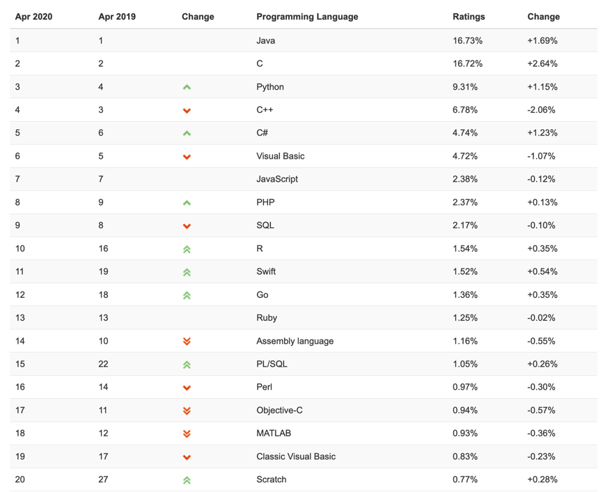
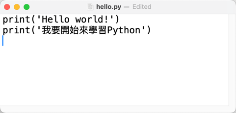
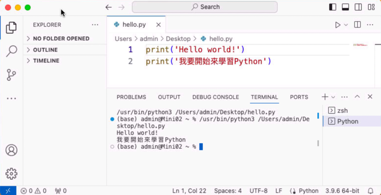
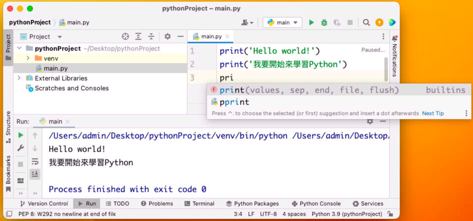
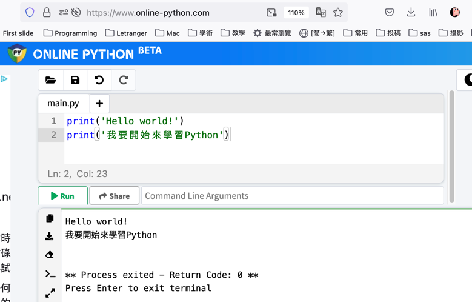
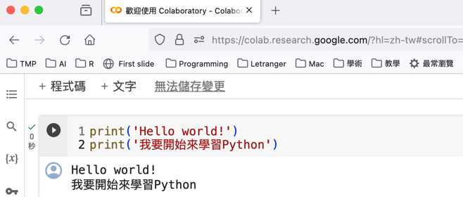
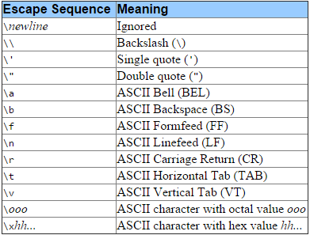
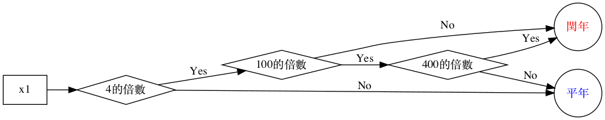

Basic Materials of Python
Table of Contents

1. Python 簡介
1.1. What is Python
Python is an advanced scripting language that is being used successfully to glue together large software components. It spans multiple platforms, middleware products, and application domains. Python is an object-oriented language with high-level data structures, dynamic typing, and dynamic binding. Python has been around since 1991, and has a very active user community. For more information, see the Python website http://www.python.org.
1.2. Python 的誕生
1.2.1. 一句話講完一部電影
The Martian
- 一個男人在火星上種菜的故事
1.2.2. 一句話講完 Python 的誕生
- 一個宅男工程師為了打發聖誔假期打造了一種新的程式語言。1
-

- 30 年後，每天都有數百萬人使用他創立的這一新語言。
- Python Customers
Get access to data on 941,453 websites that are Python Customers. We know of 120,915 live websites using Python and an additional 820,538 sites that used Python historically and 807 websites in Taiwan. 2 依據 TOIBE 的調查，目前 Python 在TOIBE最受歡迎語言的排名第三3

- 幾種不同語言受歡迎程度的變化:TIOBE 2001-2019
- Python Customers
研究人員於 2019 年首次將 5500 萬光年之外黑洞的照片拼湊出來，使用的程式語言也是 Python。
1.2.3. Guido van Rossum 自己的說法
- …in December 1989, I was looking for a “hobby” programming project that would keep me occupied during the week around Christmas.4
- My office (a government-run research lab in Amsterdam) would be closed, but I had a home computer, and not much else on my hands. I decided to write an interpreter for the new Script language I had been thinking about lately: a descendant of ABC that would appeal to Unix/C hackers.
- I chose Python as a working title for the project, being in a slightly irreverent mood (and a big fan of Monty Python’s Flying Circus). 5
1.3. Python 的優勢與應用
1.3.1. Advantages6
- Easy to learn
- High-level language
- User-friendly data structures
- Dynamically typed language(No need to mention data type based on value assigned, it takes data type)
- Object-oriented language
- Open source and community development
- Presence of third-party modules
- Extensive support libraries(NumPy for numerical calculations, Pandas for data analytics etc)
- Portable and Interactive
- Portable across Operating systems
1.3.2. Applications
- GUI based desktop applications(Games, Scientific Applications)
- Web frameworks and applications
- Enterprise and Business applications
2. Python 環境建置
想要在你的電腦執行 Python 需要安裝以下兩套軟體：
- Python 解譯器(interpter): 它的主要功能是讀取你撰寫的 Python 程式碼，然後把這些程式碼轉換為可以在電腦系統上執行的程式。
- 整合開發環境(Integrated Development Environment，簡稱 IDE): 撰寫 Python 的環境。當然，你也可以用記事本來寫 Python 程式，不過，相信我，這不是個好主意。
2.1. Python 解譯器(interpter)
當你寫好了一支 Python 程式(如下圖)
1: print('Hello world!') 2: print('我要開始來學習Python')
這段就是 Python 的程式碼，但很可惜的，電腦其實看不懂這段程式碼，此時就需要一個「翻譯」來把這段程式「翻」成電腦看的懂的語言（機器碼），這就是 Python 解譯器在做的事。
目前多數的作業系統(如 Windows, MacOS, Linux)都已內建 Python 解譯器，如果你要手動安裝，可以到官網去下載安裝程式:
2.2. 整合開發環境
有了可以翻譯程式碼的解譯器，接下來就是要找一個合適的撰寫程式工具，大致可分為以下三類：
2.2.1. 文字編輯器
如同自然語言只是一些符合特定語法(如英文、法文、日文)所書寫而成的文字，程式語言也只是一些符合特定語法(如 C++、Python、Java)所寫成的文字。所以我們可以只用各種作業系統中最基本的文字編輯器(例如 Windows 中的記事本、MacOS 中的 TextEdit、Linux 中的 vi 或 emacs)來 **寫程式**。

Figure 1: 以 MacOS 裡的 TextEdit 撰寫 Python 程式
2.2.2. IDE
雖然我們可以用一般的文字編輯器來寫程式，但正所謂「工欲善其事、必先利其器」，有更好的工具可用，我們為什麼要將就用一些勉強堪用的工具呢？程式設計師是一群非常重視工作效率的人類，他們極願意用五年來開發一個工具，只是為了將來的工作能節省五分鐘，於是這世界就存在了一些專門用來輔助程式設計師寫程式的應用程式，但是如果只是把它叫做「寫程式的程式」，一來整個格調就沒了，二來還要先解釋這是名詞還是動詞。於是，聰明的程式設計師給它取了一個聽起來比較厲害的名字: 整合式開發環境(Integrated Development Environment, IDE)。
市面上常見的、可以拿來寫 python 的 IDE 有以下幾種:
Visual Studio Code

Figure 2: 以 Visual Studio Code 撰寫 Python 程式
PyCharm

Figure 3: 以 PyCharm 撰寫 Python 程式
2.2.3. 線上 IDE/解譯器
前述的 IDE 一來要下載、二來要安裝，對於懶惰的學習者來說委實有點麻煩，於是腦筋動的快的商人就看到了這個商機，把 IDE 做成了網頁服務的型式，如此一來只要能上網就可以寫程式了，例如
Online-Python
官網： https://www.online-python.com

Figure 4: 以 Online Python 撰寫 Python 程式
Google Colab

Figure 5: 以 Google Colab 撰寫 Python 程式
3. 輸出
為什麼要寫程式？不外乎是想解決某些問題，而最終的結果應如何呈現？也許是機棫做出某些動作、發出某些聲音、創作出一幅圖畫、輸出一篇文章。以上這些都屬於輸出，而最常見的輸出就是將結果以文字形式呈現在電腦螢幕上，在 C++，我們可以用 cout 或 printf 來達成這個目的，在 Python 則是 print。
3.1. 基本輸出
3.1.1. C/C++
1: #include <iostream> 2: using namespace std; 3: int main() { 4: cout << "Hellow world!"; 5: }
Hellow world!
3.1.2. Python
輸出文字時，前後加上“或是’
1: print("Hello world!")
Hello world!
也可以輸出數字或運算式
1: print(3.1415) 2: print(10*10*3.1416) 3: print((1+3)/20)
print()裡可以用逗號連接不同類型的資料
1: print('半徑為',10,'的圓，其面積為:',10*10*3.14)
多個指令也可以寫在一行
但要以分號間隔(是的，像 C/C++那樣….)
1: print("hi"); print("how are you?")
hi how are you?
3.2. 進階輸出: print
3.2.1. 語法
- print( 項目 1, [ 項目 2, … , sep = 分隔字元 , end = 結束字元 ] )
- sep (分隔字元) 預設為空白字元
- end (結束字元) 預設為換行字元\n
3.2.2. 範例
1: a, b, c = 5, 10, 20 2: print(a, b, c) 3: print('完全不呈現預設的空白: ',a, b, c, sep ='') 4: print('以逗號來當分隔符號: ',a, b, c, sep =',') 5: print('==測試end的用法1==') 6: print(a, end='\n') #end預設值為跳行，這和 print(a)是一樣的 7: print(b, end='\n') 8: print(c, end='\n') 9: print('==測試end的用法2==') 10: print('不進行跳行: ', a, end=' ') 11: print(b, end=' ') 12: print(c, end=' ')
5 10 20 完全不呈現預設的空白: 51020 以逗號來當分隔符號: ,5,10,20 ==測試 end 的用法 1== 5 10 20 ==測試 end 的用法 2== 不進行跳行: 5 10 20
3.2.3. 跳脫字元

Figure 6: Escape char
在 python 中如果要輸出單引號(’)或雙引號(“)，除了使用跳脫字元(\)，也可以利用單引號、雙引號互換的作法，如下例：
1: #使用跳脫字元\ 2: print("他說：\"好，我試試!!\"，然後他就逝世了。") 3: #外層使用單引號 4: print('他說："好，我試試!!"，然後他就逝世了。') 5: #單引號、雙引號互換的作法 6: print("他說：'好，我試試!!'，然後他就逝世了。")
他說："好，我試試!!"，然後他就逝世了。 他說："好，我試試!!"，然後他就逝世了。 他說：'好，我試試!!'，然後他就逝世了。
- 進階閱讀: CRLF、CR、LF詳解
1: x = input() #輸入 9a 2: 3: try: 4: score = int(x) 5: print(2*score) 6: except: 7: print("Error") 8: 9: print("Hello") 10: 請問上述程式的輸出為何
3.2.4. 課堂練習
請以 print()輸出以下文字
Your brain has two parts: the left and the right.
Your left brain has nothing “right”, and your right brain has nothing “left”.
3.2.5. 格式化輸出: % (舊版)
- 語法
- 格式化輸出語法：print( 字串 %(參數) )
- 字串裡 %s 代表字串、%d 代表整數、%f 代表浮點數
- 格式化輸出語法：print( 字串 %(參數) )
範例
1: name = '台北101' 2: height = 508 3: fee = 18.24 4: print('%s的高度為%d公尺，參觀門票為%8.2f美金.' %(name, height, fee)) 5: print('%s的高度為%d公尺，參觀門票為%0.2f美金.' %(name, height, fee))
台北 101 的高度為 508 公尺，參觀門票為 18.24 美金. 台北 101 的高度為 508 公尺，參觀門票為 18.24 美金.
3.2.6. 格式化輸出: format() (新版)
- 語法
- format 格式化輸出語法：print(字串.format(變數))
- 字串裡以{0}、{1}、… 來對應參數列裡的變數
- 格式控制：print(’{0:控制字串}’.format(參數))
- format 格式化輸出語法：print(字串.format(變數))
3.2.7. 範例
輸出一個數字，不控制格式
1: score = 83 2: print(score) 3: print('{}'.format(score))
83 83
輸出一個數字並控制輸出到小數點第二位
1: height = 168.3 2: 3: print('{0:.2f}'.format(height)) 4: # 上一行{}中的0代表該處要輸出format()中的第0個變數，只有一個時也可以省略 5: print('{:.2f}'.format(height)) 6: 7: # 加入文字 8: print('身高為:{:.2f}'.format(height))
168.30 168.30 身高為:168.30
輸出兩個變數並控制輸出格式
1: weight = 65.33 2: height = 168.33 3: # 不跳行 4: print('{0:.2f}{1:.3f}'.format(height, weight)) 5: # 跳行 6: print('{0:.2f}\n{1:.3f}'.format(height, weight)) 7: # 跳行並加入說明文字 8: print('身高:{0:.2f}\n體重:{1:.3f}'.format(height, weight))
168.3365.330 168.33 65.330 身高:168.33 體重:65.330
輸出三個不同型別的變數
1: name = 'Vanessa' 2: height = 165 3: weight = 52.3 4: print('{0}的身高是{1}公分、體重是{2:.2f}公斤'.format(name, height, weight))
Vanessa 的身高是 165 公分、體重是 52.3000 公斤
如何控制輸出字串的靠齊方向
和數字輸出一樣，我們可以預留一些空間給文字輸出，並控制文字的靠齊方向，例如
- {:>}: 向右靠
- {:<}: 向左靠
- {:^}: 置中對齊
下例中我們預留了 8 個空格來顯示姓名(name) ,並要求向右對齊
1: name1 = 'James' 2: name2 = 'Vanessa' 3: print('My name is {0:>8}. Nice to meet you.'.format(name1)) 4: print('My name is {0:>8}. Nice to meet you.'.format(name2))
My name is James. Nice to meet you. My name is Vanessa. Nice to meet you.
3.2.8. 格式化輸出: Template
1: from string import Template 2: 3: name = 'TNFSH' 4: tmp = Template('Hello, $who') 5: print(tmp.substitute(who = name)) 6:
Hello, TNFSH
3.2.9. 進階閱讀
3.3. 進階輸出: f-string
Python 3.6 起增加的新字串格式化功能，可以把 Python 運算式嵌入在字串裡，由於 f-string 轉換時會做最佳化，其速度會比前面的文字格式化稍稍快一點。
1: name = 'James' 2: age = 19 3: print(f'{name} is {age} years old now') 4: r, pi = 10.4, 3.141592 5: print(f'半徑為{r:.2f}的圓，其面積為{r*r*pi:.4f}')
James is 19 years old now 半徑為 10.40 的圓，其面積為 339.7946
4. 變數
想法: 讓底下的程式碼更有彈性些，可以算任何的半徑值….
1: print('半徑為',10,'的圓，其面積為:',10*10*3.14)
以變數來值存半徑
1: r = 10 2: print('半徑為',r,'的圓，其面積為:',r*r*3.14) 3: r = 20 4: print('半徑為',r,'的圓，其面積為:',r*r*3.14) 5: r = 30 6: print('半徑為',r,'的圓，其面積為:',r*r*3.14)
4.1. 變數的指派(assign)
- Python 變數不需宣告，依指派值自動設定資料型態(dynamically typing)。
語法
變數名稱 = 指派值- 變數不再使用時，可用 del 指令將其刪除，以節省記憶體。
- 範例：
1: a = 5 2: b = 3.14 3: c = 'TNFSH' 4: a = b = c = 10 5: a += 1 # 相當於 a = a + 1，還有 -=, *=, /= 6: name, number = 'TNFSH', 35 # 多個變數一同指派 7: quotient, mod = divmod(10, 3) 8: print(quotient) 9: print(mod) 10: del c 11: print(name) 12: # swap交換兩個變數的值 13: print(a, b) 14: a, b = b, a 15: print(a, b)
3 1 TNFSH 11 10 10 11
4.2. 變數的命名規則
- 由英文、數字、底線、中文(不建議)組成
- 不得以數字開頭
- 不能與 Python 內建的保留字相同
4.2.1. 範例
| Example | ✓ / × |
|---|---|
| abc_123 | ✓ |
| 3pigs | × |
| Happy New Year | × |
| Class | × |
| Good! | × |
4.3. 變數的各種資料型態
4.3.1. 變數型態的判斷: type()
1: print(type(2020)) 2: print(type(3.1416)) 3: print(type('Hello world'))
4.3.2. 常用類型
- 整數: int
- 浮點數: float
- 布林值(True / False): bool, T 與 F 要大寫
- 字串: str, 以’或“含括,若輸出字串要包含引號，則以另一種引號含括該字串，或是在前面加上跳脫字元（\)。
1: age = 18 2: weight = 67.87 3: good_words = " 請常說'請'、'謝謝'、'對不起' " 4: other_words = "請常說\"請\"、\"謝謝\"、\"對不起\"" 5: print(type(age)) 6: print(type(weight)) 7: print(type(good_words)) 8: print(other_words)
<class 'int'> <class 'float'> <class 'str'> 請常說"請"、"謝謝"、"對不起"
- 序列型態: list, tuple
- 集合型態: set
- 對映型態: dict
4.3.3. 型態轉換
- 自動轉換
1: score = 60 2: print(type(score)) 3: score = score + 3.5 # 自動轉換為浮點數，結果為63.5 4: print(type(score))
<class 'int'> <class 'float'>
- 強制轉換
1: score = int(30.22) # 將括弧內的資料轉換為整數 2: score = float(score) # 將括弧內的資料轉換為浮點數 3: test = str(score)# 將括弧內的資料轉換為字串
5. 輸入
想法: 讓前一版的程式更有彈性
1: print('半徑為',10,'的圓，其面積為:',10*10*3.14)
由 使用者 來指定半徑
1: r = input() 2: print('半徑為',r,'的圓，其面積為:',r*r*3.14)
修正問題
1: r = input() 2: r = int(r) 3: print('半徑為',r,'的圓，其面積為:',r*r*3.14)
5.1. 輸入: 基本輸入與型別轉換
5.1.1. 語法/範例
語法
1: variable = input([提示字元])
- PS: 經由 input( )函式讀入的資料，其資料型態皆為字串
範例
1: a = input('輸入國文成績:') 2: b = input('輸入數學成績:') 3: c = input() 4: print('三科成績分別為%5s %5s %5s' %(a, b, c))
5.1.2. 輸入搭配型別轉換
1: a = int(input('輸入國文成績:')) 2: b = int(input('輸入數學成績:')) 3: c = int(input()) 4: print('總分為%5d' %(a+b+c))
5.2. 進階輸入處理
python 的 input()函數每次讀入一行資料，直到換行為止，但如果這行資料裡就包含了許多變數，那就應該先把字串切割(split())成許多子部份，然後視需要另做型別轉換。
5.2.1. input syntax:
1: input().split(separator, maxsplit)
- seperator (optional): separator (optional)- The is a delimiter. The string splits at the specified separator. If the separator is not specified, any whitespace (space, newline etc.) string is a separator.
- maxsplit (optional): The maxsplit defines the maximum number of splits. The default value of maxsplit is -1, meaning, no limit on the number of splits.
- Return Value from split(): The split() breaks the string at the separator and returns a list of strings.
5.2.2. 適用狀況
假設我們面對兩種不同的資料輸入方式：
狀況一：輸入的資料為三個成績同時寫在一行(以空白分隔)
1: 23 45 66
狀況二：三個成績分為三列(每次都按 enter)
1: 23 2: 45 3: 66
對 C/C++來說，這並不是什麼特別的問題，上述兩種狀況都可以用三個 cin 將成績讀進程式：
1: #include <iostream> 2: using namespace std; 3: int main() { 4: int a, b, c; 5: cin >> a >> b >> c; 6: }
但是對 python 來說，如果針對狀況一的資料以下列方式讀入
1: scoreX = input() #一次把整列資料讀完 2: scoreY = input() #沒資料可以讀 3: scoreZ = input()
則 scoreX 的值會變成字串’23 45 66’，而 scoreY, scoreZ 會沒有值，因為這行裡的所有資料全部被讀入 scoreX 中。
5.2.3. 解決方案
作法 1:
讀入整行字串後，
再以字串分割處理，最後將分割後的字串分別 assign 給不同的變數。例如已知第一行有三個值，則可以先準備好三個變數來儲存被 split 切割後的三個值
1: scoreX, scoreY, scoreZ = input().split()
作法 2:
先把段輸入存成一個字串變數(inp)，再對這個變數做 split，從這裡我們也可以隠約了解 split()這個 function 是 字串變數 專屬的 function(split()是 python 字串的切割 function，進階閱讀)。
1: inp = input() #先把輸入的字串存到字串變數inp裡 2: a, b, c = inp.split() #再用split()去切割inp字串， 3: # 依此類推逐一取得輸入值 4: a = int(a) 5: b = int(b) 6: c = int(c)
作法 3:
也可以用一個 list 來儲存所有被 split 切割的值，最後再由 list 來取得值(詳見11.1)
作法 4:
前提為所要輸入的資料都可以轉換成整數，請自行 google 有關 map 的進階用法
1: scoreX, scoreY, scoreZ = map(int, input().split())
作法 5:
在一行輸入不定個數的整數
1: a = [int(x) for x in input().split()]
- 得到的 a 為 int list
- 可以想像為集合表示法 s = {x | 1<x<n }，所有符合 1<x<n 的 x 所組成的集合
5.3. try-exception
- 大部分執行中的錯誤， Python 直譯器 (interpreter) 會以發起例外 (exception) 的方式來中斷程式的執行。
- 凡是可能會產生例外的程式碼， Python 利用 try-except 陳述 (try-except statement) 讓程式設計師自行處理例外。 try-except 為關鍵字 (keyword) 之一，專門用來例外處理 (exception handling) 的。
- 進階: Python Try Except
5.3.1. 解決文字轉數字可能發生的問題
1: import math 2: instr = input() #輸入a9 3: score = float(instr) 4: 5: score = math.sqrt(score)*10 6: print('{0:.4f}'.format(score))
Traceback (most recent call last):
File "main.py", line 3, in <module>
score = float(instr)
ValueError: could not convert string to float: 'a9'
5.3.2. 解決上述問題
1: import math 2: 3: instr = input() #輸入a9 4: 5: try: 6: score = float(instr) 7: score = math.sqrt(score)*10 8: print(score) 9: except: 10: print("Error")
Error
5.3.3. 如果有很多個變數需要檢查例外呢
也許你可以一個一個去變更資料類型，如果出問題後就 結束 程式，不要再往下執行，在 python 中，你可以透過呼叫 sys 模組中的 exit()或是 os 模組中的_exit()來終止程式，請自行參閱這篇，或者，你更應該自己透過關鍵字去膜拜一下 Google 大神，例如 python stop program 之類的….
5.3.4. 進階閱讀
5.4. 註解
- 語法
- 單行註解：以 # 開頭
- 多行註解：前後以 ’’’ 或 “”“ 含括
- 單行註解：以 # 開頭
範例
1: ## 這是單行註解 2: int a = 3 3: ''' 4: 這是多行註解 5: LALALA 6: ''' 7: print(a) 8: """ 9: 這也是 10: """
6. 運算元與運算式
6.1. 算術運算
- +: 加
- -: 減
- *: 乘
- /: 除
- %: 取餘數
- //: 求商
- **: 指數
6.1.1. 算術運算範例#1
1: # python code for arithematic opearation 2: print(5+3) 3: print(5-3) 4: print(5*3) 5: print(5/3) 6: print(5%3) 7: print(5//3) 8: print(5**3)
8 2 15 1.6666666666666667 2 1 125
6.1.2. 算術運算範例#2
1: a = int(input("input a: ")) 2: op = input("input op: ") 3: b = int(input("input b: ")) 4: 5: if op == '+': 6: ans = a + b; 7: elif op == '-': 8: ans = a - b; 9: elif op == '*': 10: ans = a * b; 11: elif op == '/': 12: ans = a / b; 13: elif op == '%': 14: ans = a % b; 15: 16: print(str(a) + op + str(b) + "=" + str(ans)) 17:
6.1.3. 字串運算
1: print("Python"+"基礎") 2: print(3*"Python基礎")
Python 基䂾 Python 基礎 Python 基礎 Python 基礎
6.2. 關係運算子
| 運算子 | > | < | >= | <= | == | != |
|---|---|---|---|---|---|---|
| 範例 | 大於 | 小於 | 大於等於 | 小於等於 | 等於 | 不等於 |
6.3. 邏輯運算子
| 運算子 | and | or | not |
|---|---|---|---|
| 範例 | (a>b) and (a<c) | (a>b) or (a==b) | not (a>b) |
6.4. 複合指定運算子
| 運算子 | += | -= | *= | /= | %= | //= | **= |
|---|---|---|---|---|---|---|---|
| 範例 | a+=3 | a-=3 | a*=3 | a/=3 | a%=3 | a//=3 | a**=3 |
| 等價運算 | a=a+3 | a=a-3 | a=a*3 | a=a/3 | a=a%3 | a=a//3 | a=a**3 |
6.5. 指派運算子
Assignment expression, Python 3.8 起加入的新功能，其功能是指派值或運算式的結果給變數、接著傳回該變數的值。
以下列程式為例，原本要每次都輸入一個值，判斷其值是否為 0，再決定是否繼續下去。
1: a = int(input()) 2: while a != 0: 3: print(f'value: {a}') 4: a = int(input())
若改為 assignment(:=)，則可以寫為
1: # a不為int時結束 2: while a := int(input()): 3: print(f'value: {a}')
要防止轉換錯誤發生:
1: while a := input(): 2: try: 3: print(f'value: {int(a)}') 4: except ValueError: 5: print(f'Not integer') 6: break;
6.6. 實作練習
7. 內建與外部函數
7.1. 基本函數與運算子
7.1.1. ord()
傳回某字元的 ASCII code /Unicode
1: print(ord('A')) 2: print(ord('©')) 3: print(ord('南')) 4: print(ord('一'))
65 169 21335 19968
7.1.2. chr()
傳回某 ASCII/Unicode 所代表的字元
1: print(chr(97)) 2: print(chr(169))
a ©
7.1.3. len()
傳回字串長度
1: print(len('Python基礎'))
8
7.1.4. max()/min()
傳回字串 Unicode 最大/最小字元
1: print(max('Python基礎LALALA')) 2: print(min('Python基礎LALALA')) 3: print(len('Hello'))
礎 A 5
7.1.5. str()
將數值參數轉為字串
1: print(str(3.1416) + str(2020))
3.14162020
7.2. 數值處理函數
- abs(x)
- min(x1, x2 [, x3…])
- max(x1, x2 [, x3…])
- pow(x, y [, z]): docs.python.org
- divmod(x, y)
1: print(max(23, 41, 90)) 2: print(min(23, 41, 90)) 3: print(pow(2,10)) 4: print(divmod(10, 3)) #傳回10/3的商級餘數
90 23 1024 (3, 1)
7.3. 外部函數
有些函數被定義在其他的函式庫中，要使用時必須先import，例如sqrt()這個函數就是被定義在math函式庫中
1: import math 2: 3: a = 36 4: b = math.sqrt(a) 5: print(b)
6.0
8. 字串
字串(string)是 Python 中表示字元序列的資料結構，字串的應用十分廣泛，例如用來儲存文字資料、表示名稱、地址以及可以表示為文字的其他類型的資料。
8.1. 字串的建立
可以用一對單引號(’)、雙引號(“”)或是三個雙引號來建立字串，例如:
1: str1 = 'This is a string variable' 2: str2 = "這也是字串" 3: str3 = """這還是字串""" 4: print(str1) 5: print(str2) 6: print(str3)
This is a string variable 這也是字串 這還是字串
8.2. 字串資料表示格式
如同一年級在 C++中看到的陣列一樣，我們可以用如下的語法取得字串中的字元
1: 字串變數[index]: 字串中 index 所在字元
例如
1: sch = 'Taina First Senior High School' 2: print(sch[0]) 3: print(sch[1])
與陣列不同的是在 python 字串的定位中，index 可以是負數，如
1: sch = 'Taina First Senior High School' 2: print(sch[-1]) 3: print(sch[-2])
l o
8.3. 字串資料切片(slice)
字串資料的 index 也可以使用如下的範圍表示法
1: 字串變數[start:end]: 截取部份字串
上述語法可取得 start <= index < end 的所有子字串，例如
1: sch = 'Taina First Senior High School' 2: print(sch[1:3])
ai
此外，start 與 end 均可省略，例如
1: sch = 'Taina First Senior High School' 2: print(sch[:3]) 3: print(sch[3:]) 4: print(sch[:])
Tai na First Senior High School Taina First Senior High School
也可再加入另一個 increment，每隔數個字元取一個，語法為:
1: 字串變數[start:end:increment]: 截取部份字串
例如
1: sch = 'Taina First Senior High School' 2: print(sch[1:10:2])
an is
8.4. 字串為不可變的資料
在 python 中，字串資料為一種不可變(immutable)的資料類型，這意味著一旦創建了字串，就無法更改它。
以下的程式會出現錯誤：
1: sch = 'taina First Senior High School' 2: sch[0] = 'T'
但可賦予字串變數另一個全新的值，例如
1: sch = 'Taina First Senior High School' 2: print(sch) 3: sch = 'I Love TNFSH' 4: print(sch)
Taina First Senior High School I Love TNFSH
8.5. 範例 2
1: tel = '06-2371206' 2: ext = '#600' 3: # + 4: print('tel+ext:',tel+ext) 5: # * 6: print('ext*2:', ext*2) 7: # [index] 8: print('tel[5]:', tel[5]) 9: # [start:end:increment] 10: print('tel[1:4]:',tel[1:4]) 11: print('tel[6: ]:',tel[6: ]) 12: print('tel[ :6]:',tel[ :6]) 13: print('tel[::-1]:',tel[::-1]) 14: # in 15: print("'9' in tel:", '9' in tel)
tel+ext: 06-2371206#600 ext*2: #600#600 tel[5]: 7 tel[1:4]: 6-2 tel[6: ]: 1206 tel[ :6]: 06-237 tel[::-1]: 6021732-60 '9' in tel: False
8.6. 相關的字串 function
- len(<str>): 計算字串長度
- <str>.lower(): 字串轉小寫
- <str>.upper(): 字串轉大寫
- <str>.islower(): 字串中英文全大寫
- <str>.isupper(): 字串中英文全小寫
- <str>.find(<str1>): 在<str>尋找<str1>，回傳索引值；
若未找到，回傳-1
- <str>.replace(<str1>, <str2>): 將<str>中的<str1>以<str2>取代
- <str>.split([sep]): 字串以 sep 分割, sep 預設值為空白
8.7. 範例 3
1: school = 'Tnfsh' 2: print('school:', school) 3: print('len(school):', len(school)) 4: print('school.lower():', school.lower()) 5: print('school.isupper():', school.isupper()) 6: print("school.find('fsh'):", school.find('fsh')) 7: print("school.replace('fsh', ssh'):", school.replace('fsh', 'ssh')) 8: print("school.split('f'):", school.split('f'))
school: Tnfsh
len(school): 5
school.lower(): tnfsh
school.isupper(): False
school.find('fsh'): 2
school.replace('fsh', ssh'): Tnssh
school.split('f'): ['Tn', 'sh']
9. 判斷結構
9.1. if
9.1.1. 語法
- 條件式可不用括號( )含括，條件式後需搭配冒號：
- 程式區塊以縮排方式處理，同一層縮排視為同一程式區塊
1: if condition: 2: statement 1 3: ...
9.1.2. 範例
1: num = 31 2: if num % 2 == 0: 3: print('{0} is even'.format(num)) 4: if num % 2 == 1: 5: print('{0} is odd'.format(num))
31 is odd
9.1.3. 測試
1: import math 2: magicNum = 37 3: 4: if math.sqrt(magicNum)*10 < 60: 5: print('NO', sep='', end='') 6: print('YES', sep='', end='')
YES
9.2. if … else …
9.2.1. 語法
1: if condition: 2: statement 1 3: ... 4: else: 5: statement 3 6: ...
9.2.2. 範例
1: num = 32 2: if num % 2 == 0: 3: print('{0} is even'.format(num)) 4: else: 5: print('{0} is odd'.format(num))
9.3. if … elif … else …
9.3.1. 語法
1: if condition 1: 2: statement 1 3: ... 4: elif condition 2: 5: statement 3 6: ... 7: elif condition 3: 8: statement 5 9: ... 10: else: 11: statement N
9.3.2. 範例
1: score = 87 2: if score >= 90: 3: print('A') 4: elif score >= 80: 5: print('B') 6: elif score >= 70: 7: print('C') 8: elif score >= 60: 9: print('D') 10: else: 11: print('F')
9.4. python 的邏輯判斷
9.4.2. 不同於其他語言，python 允許下列的邏輯判斷：
1: score = 87 2: if 60 <= score <= 100: 3: print("Pass") 4: else: 5: print("Fail")
Pass
9.5. 巢狀 if
9.5.1. 語法
1: if condition 1: 2: statement 1 3: ... 4: if condition 2: 5: statement 3 6: ... 7: else: 8: statement 5 9: ... 10: else: 11: if conditi6on 3: 12: statement 7 13: ... 14: else: 15: statement N 16: ...
9.5.2. 範例: 某年份是否為閏年
解題流程
閏年判斷流程

Figure 7: 閏年判斷流程
code #1
year = int(input("請輸入一個年份:")) if (year % 4) == 0: if (year % 100) == 0: if (year % 400) == 0: print("{0}年是世紀閏年".format(year)) else: print("{0}年為平年".format(year)) else: print("{0}年是普通閏年".format(year)) else: print("{0}年為平年".format(year))
code #2
year = int(input("請輸入一個年份:")) if (year % 4) == 0 and (year % 100) !=0 or (year % 400) == 0: print("%s年是閏年" % year) else: print("%s年為平年" % year)
9.6. match-case (Python 3.10)
類似 C/C++的 switch-case 結構，從 3.10 版開始支援，使用前請先確定 python 版本。
1: #name = input("What's your name? ") 2: name = "Harry" 3: 4: match name: 5: case "Harry" | "Hermione" | "Ron": 6: print("Gryffindor") 7: case "Draco": 8: print("Slytherin") 9: case _: 10: print("Who?")
9.7. 如何確認 python 版本
9.7.1. Python script
- System module
1: import sys 2: print(sys.version)
3.9.12 (main, Apr 5 2022, 01:53:17) [Clang 12.0.0 ]
- platform module
1: import platform 2: print(platform.python_version())
3.9.12
9.7.2. Terminal
1: python --version
Python 3.9.12
10. 迴圈結構
10.1. for
10.1.1. 語法
1: for variable in sequence: 2: statement 1 3: ...
- for 迴圈的變數會依序走訪 sequence 中的元素
- sequence7可為 range 函式、字串(string)、表列(list)、元組(tuple)、字典(dict)、集合(set)
10.1.2. List 為 range() function 語法
for variable in range([起始值,] 終止值 [,遞增值]): statement 1 ...
- 起始值預設為 0，遞增值預設為 1
- 起始值 ≤ range( )的範圍 < 終止值
10.1.3. List 為 range() function 語法
1: for x in range(4): 2: print(x) 3: print('========') 4: for x in range(3, 10): 5: print(x, end=', ') 6: print('\n========') 7: for x in range(3, 10, 2): 8: print(x, end=',')
0 1 2 3 ======== 3, 4, 5, 6, 7, 8, 9, ======== 3,5,7,9,
10.1.4. 重要觀念
請問下列程式會輸出幾個*
1: for i in range(10): 2: i = 5 3: print('*')
你可以解釋一下為什麼嗎?
如果把程式改成這樣，會輸出什麼?
1: for i in range(10): 2: i = 5 3: print(i)
這和你所熟悉的 C/C++有什麼不一樣呢?
10.1.5. List 為 String
1: school = 'TNFSH' 2: for x in school: 3: print(x, end=' ') 4: print('\n=========') 5: for x in school: 6: print(chr(ord(x)+1), end=' ')
T N F S H ========= U O G T I
- ord( ) -> 將字元轉為 ASCII 編碼(整數)
- chr( ) -> 將 ASCII 編碼(整數)轉為字元
1: school = '高雄市' 2: for x in school: 3: print(x, end=' ') 4: print('\n=========') 5: for x in school: 6: print(chr(ord(x)+1), end=' ') 7:
高 雄 市 ========= 髙 雅 布
10.1.6. 課堂練習
以 FOR 輸出以下字串(提示:字串有兩個常用 function: ord()/chr())
abcdefghijklmnopqrstuvwxyz zyxwvutsrqponmlkjihgfedcba
10.2. break / else
10.2.1. break
在迴圈中，只要碰到 break 就會跳出迴圈，無論是 while 或 for 迴圈都會馬上跳出。使用 break 陳述句，你只需要打上 break，不須加其他東西。
例
1: for i in range(10): 2: print(i) 3: if i == 5: 4: break 5: print('END')
0 1 2 3 4 5 END
適用時機
檢查某一數是否為質數(假設 n=15)時，常見的做法是由 2~7 逐一測試是否能整除 n，然而測到 3 時就會發現 n 可以被 3 整除，此時還需要再往下測嗎?當然不用，這就是 break 最佳出場時機了…
1: num = 32 2: for i in range(2, num//2): 3: if num % i == 0: #找到因數 4: print('這不是質數') 5: break
這不是質數
有沒有覺得上面的要求有點 déjà vu?高一時我們曾經練習過利用 C++寫出判斷某數是否為質數的程式，上面的例子就可以用來解決其中的一個部份功能：如果找到因數，那麼這個數就不是質數….
10.2.2. else
- 判斷 for 是否正常結束，迴圈 正常結束 後就會執行 else 語句，換言之，else 只有在迴圈 不正常結束時 才會 不執行 。
- 不正常退出迴圈的情況包括 break 語句中斷迴圈，return 語句結束迴圈，和其他一些異常情況。即在迴圈內不執行 break，return 語句或者沒有異常情況時都會執行 else 語句。
範例
回到上面的例子，那如果找一直找不到因數呢?顯然 for 迴圈就會從頭跑到尾，都沒機會去執行 break，換句話說，就是迴圈 正常結束 ，這代表:這個數就是合數，這就是 else 出場的時候了….
1: num = 37 2: for i in range(2, num//2): 3: if num % i == 0: 4: print('這不是質數') 5: break 6: else: 7: print('這是質數')
這是質數
有沒有覺得這個設計很好用?沒有的話再把這段從頭看一次……
10.3. while
10.3.1. 語法
基本用法與 C/C++相同
while (condition): statement 1 ...
10.3.2. 範例
1: n = 12345 2: while (n > 0): 3: print(n%10) 4: n //= 10
5 4 3 2 1
1: m, n = 42, 75 2: while (n > 0): 3: m, n = n, m % n 4: print(m)
3
10.3.3. break
在迴圈中，只要碰到 break 就會跳出迴圈，無論是 while 或 for 迴圈都會馬上跳出。使用 break 陳述句，你只需要打上 break，不須加其他東西。
1: while True: 2: print('How is your day?') 3: your_reply = input() 4: if your_reply == 'quit': 5: break 6: print('good bye')
10.3.4. else
- 判斷 while 是否正常結束，else 只有在迴圈不正常退出時才會不執行，正常迴圈執行結束後就會執行 else 語句。
- 不正常退出迴圈的情況包括 break 語句中斷迴圈，return 語句結束迴圈，和其他一些異常情況。即在迴圈內不執行 break，return 語句或者沒有異常情況時都會執行 else 語句。
語法
1: while condition: 2: # code block to run 3: else: 4: # else clause code block
範例 1
1: count = 11 2: while count < 5: 3: print(count) 4: if count == 3: 5: break 6: count += 1 7: else: 8: print('正常執行結束')
正常執行結束
範例 2
檢查一個數是否為質數
1: n = 37 2: i = 2 3: while i <= n//2: 4: if n % i == 0: #找到因數 5: print('n不是質數') 6: break 7: i += 1 #i的值從2測到n的一半 8: else: #如果都沒被break，表示都沒找到因數 9: print('n是質數')
n 是質數
10.3.5. 練習
取代 flag
code 1
1: nums = [60, 70, 30, 110, 90] 2: found = False 3: for n in nums: 4: if n > 100: 5: found = True 6: print "There is a number bigger than 100" 7: break 8: 9: if not found: 10: print "Not found!"
code 2
1: nums = [60, 70, 30, 110, 90] 2: for n in nums: 3: if n > 100: 4: print "There is a number bigger than 100" 5: break 6: else: 7: print "Not found!"
10.3.6. 連續輸入類型問題
某些狀況下，我們需要連續讀入資料，直到 讀完 所有資料為止……
方法 1
1: ins = input() 2: while ins !='': 3: print(ins) 4: ins = input()
方法 2
1: while True: 2: ins = input() 3: if ins == '': 4: break 5: print(ins)
10.3.7. 作業
6C. 分數統計
因數列舉: 使用 else
10.4. break / continue / pass
10.4.1. break
跳出整個 loop。檢查某一數是否為質數(假設 n=15)時，常見的做法是由 2~7 逐一測試是否能整除 n，然而測到 3 時就會發現 n 可以被 3 整除，此時還需要再往下測嗎?當然不用，這就是 break 最佳出場時機了…
範例
1: count = 0 2: for letter in 'Python': 3: count += 1 4: if letter == 'h': 5: break 6: print('Processing Letrer:', letter) 7: print(f'迴圈一共跑了{count}次')
Processing Letrer: P Processing Letrer: y Processing Letrer: t 迴圈一共跑了 4 次
練習
Given a positive integer N. The task is to write a Python program to check if the number is prime or not.
- Definition:
A prime number is a natural number greater than 1 that has no positive divisors other than 1 and itself. The first few prime numbers are {2, 3, 5, 7, 11, ….}. - Examples :
Input: 11 Output: true Input: 15 Output: false Input: 1 Output: false
10.4.2. continue
跳出單次 loop、繼續下一個迴圈。和 break 不同，continue 只會跳過其中的一次迴圈，但是仍會繼續往下把整個迴圈跑完。
範例
1: count = 0 2: for letter in 'Python': 3: count += 1 4: if letter == 'h': 5: continue 6: print('Processing Letrer:', letter) 7: print(f'迴圈一共跑了{count}次')
Processing Letrer: P Processing Letrer: y Processing Letrer: t Processing Letrer: o Processing Letrer: n 迴圈一共跑了 6 次
練習
Given a string. Print all letters in this string except ’N’ and ’S’.
- Example:
Input: TNFSH Output: TFH
10.4.3. pass
什麼事都不幹…..
範例
1: count = 0 2: for letter in 'Python': 3: count += 1 4: if letter == 'h': 5: pass 6: print('Processing Letrer:', letter) 7: print(f'迴圈一共跑了{count}次')
Processing Letrer: P Processing Letrer: y Processing Letrer: t Processing Letrer: h Processing Letrer: o Processing Letrer: n 迴圈一共跑了 6 次
啊有差嗎?
在迴圈中使用 pass 語句，執行程式後，你會發現什麼事也沒做，完全不起任何作用，只是一個空運算而已，那問題就來了：
如果什麼事都不做，就不用寫拉，那 pass 語句是要做什麼的？ …… ✍︎
其實有時候會有非寫不可的情況！！
pass 就像是 To do 的概念，在寫程式的時候，有時候想的比實際寫出來的速度快，例如定義一個函數，但還沒有實作出來，空著內容不寫又會產生語法錯誤，這時就會使用 pass 來替代，當作是個指標，提醒自己之後要來完成8。
1: def myfunction(): 2: pass #提醒自己之後要來完成
或是，如果你要自訂一個 Exception class
1: class MyException(Excpetion): 2: pass 3: 4: try: 5: 1/0 6: except: 7: pass
沒有 pass 的話上述程式碼就會出錯
又或者看一下底下的例子9:
1: text = "I am a coder." 2: 3: if text == "I am not a coder.": 4: print("Programming is interesting! You should try it out!") 5: elif text == "I am a coder.": 6: pass
- pass is just a syntactical placeholder used to fill up some space. If you don’t want to do anything if a particular condition checks out, you can use pass as a placeholder. You cannot just write an empty condition, loop or function in Python.
- pass could be used in scenarios when you need some empty functions, classes or loops for future implementations, and there’s no requirement of executing any code.
10.5. for / while + else
Python 一個十分有趣的 loop 語法是它能配合 else 來用，語法如下：
1: for n in ...: 2: if condition is true: 3: .... 4: break 5: else: 6: print("all condition is false")
如果上述的 for 迴圈從頭到尾都沒有去跑過 break(也就是說 condition 都不成立，for 正常結束)，那麼 else 裡的程式碼就會被執行。那麼，何時會用到這個有趣的語法呢？
以質數判斷為例：原本的寫法為:
1: n = 22 2: isPrime = True 3: for x in range(2, n//2 + 1): 4: if n % x == 0: 5: isPrime = False 6: print("Composite Number!") 7: break 8: if isPrime: 9: print("Prime number")
Composite Number!
套用 else 後則可改為，即，如果 for 迴圈都沒執行，則執行 else:
1: n = 23 2: for x in range(2, n//2 + 1): 3: if n % x == 0: 4: print("Composite Number!") 5: break 6: else: 7: print("Prime number") 8:
Prime number
10.5.1. 進階閱讀:
10.6. 多測資輸入
以前在 C++處理多測資狀況時可以用 while 來處理:
1: int n; 2: while (cin>>n) { 3: //.... 4: }
10.6.1. ’’ checking
判斷是否讀到空的資料，下例中，如果是對空資料進行 int()型態轉換，就會得到 ValueError，也可以藉此判斷是否已無資料可讀取
1: while True: 2: try: 3: test = int(input()) 4: except ValueError: 5: break
10.6.2. EOF checking
有時，某些程式的要求是要你不斷的輸入、計算、輸出結果，直到沒有輸入為止，這種多測資的問題常常會在考試或比賽時遇到。其實，有些評分系統在“餵”輸入給你的程式時，是從 一個存了許多測資的文字檔 裡一列一列把資料讀出來，然後餵給你程式中的 input()，當文字資料讀到檔案結尾，就會出現一個 EOF(End of File)的符號，所以，我們可以用 try…except 來抓這個符號，如下:
1: try: 2: while True: 3: test = input() 4: # 這裡是你的解 5: # ... 6: # ... 7: except EOFError: 8: pass #讀到檔案結尾就結束不做事
- EOF 是從檔案讀取資料時結果讀到檔案結尾符號，但是一般我們在寫程式都是從鍵盤輸入資料來進行測試，那怎麼送出一個 EOF 符號給程式呢？答案是按 cmd-D(for MacOS)、Ctrl-D(for Linux)或是 Ctrl-Z(for windows 系統)
- 注意: 用上述方式讀資料，在教學網中似乎有時會導致多讀一個’’的元素進來，原因還不清楚，建議在送出到教學網後，可以在將資料讀入 list 後先 print 出來檢測一下，如果發現最後多了一筆資料，就將它 pop 掉。
- 如果你用了 EOFError 卻 無法正常執行 ，請試著把 EOFError 拿掉，如:
1: try: 2: while True: 3: test = input() 4: # 這裡是你的解 5: # ... 6: # ... 7: except: 8: pass #讀到檔案結尾就結束不做事
10.7. 巢狀迴圈
10.7.1. 範例
1: for i in range(1, 10): 2: for j in range(1, 10): 3: print('%d*%d=%2d' %(i, j, i*j), end=' ') 4: print() 5:
1*1= 1 1*2= 2 1*3= 3 1*4= 4 1*5= 5 1*6= 6 1*7= 7 1*8= 8 1*9= 9 2*1= 2 2*2= 4 2*3= 6 2*4= 8 2*5=10 2*6=12 2*7=14 2*8=16 2*9=18 3*1= 3 3*2= 6 3*3= 9 3*4=12 3*5=15 3*6=18 3*7=21 3*8=24 3*9=27 4*1= 4 4*2= 8 4*3=12 4*4=16 4*5=20 4*6=24 4*7=28 4*8=32 4*9=36 5*1= 5 5*2=10 5*3=15 5*4=20 5*5=25 5*6=30 5*7=35 5*8=40 5*9=45 6*1= 6 6*2=12 6*3=18 6*4=24 6*5=30 6*6=36 6*7=42 6*8=48 6*9=54 7*1= 7 7*2=14 7*3=21 7*4=28 7*5=35 7*6=42 7*7=49 7*8=56 7*9=63 8*1= 8 8*2=16 8*3=24 8*4=32 8*5=40 8*6=48 8*7=56 8*8=64 8*9=72 9*1= 9 9*2=18 9*3=27 9*4=36 9*5=45 9*6=54 9*7=63 9*8=72 9*9=81
10.7.2. 如何將資料讀入二維陣列
1: a = [1, 2, 3, 4] 2: b = [5, 6, 7, 8] 3: c = [] 4: c.append(a) 5: c.append(b) 6: print(c)
[[1, 2, 3, 4], [5, 6, 7, 8]]
10.8. 實作練習
10.8.1. 所有位數平方和
輸入一整整數，輸出該整數所有位數平方和
Example
Input: 12345 Output: 55
10.8.2. 從1加到多少才會大於m?
- 求 1+2+3+…+n<=m，已知 m 時之最大的 n 值。
- 輸入 m，輸出 n。
10.8.3. 輸出 99 乘法表
輸出如下的結果
1*1= 1 1*2= 2 1*3= 3 1*4= 4 1*5= 5 1*6= 6 1*7= 7 1*8= 8 1*9= 9 2*1= 2 2*2= 4 2*3= 6 2*4= 8 2*5=10 2*6=12 2*7=14 2*8=16 2*9=18 3*1= 3 3*2= 6 3*3= 9 3*4=12 3*5=15 3*6=18 3*7=21 3*8=24 3*9=27 4*1= 4 4*2= 8 4*3=12 4*4=16 4*5=20 4*6=24 4*7=28 4*8=32 4*9=36 5*1= 5 5*2=10 5*3=15 5*4=20 5*5=25 5*6=30 5*7=35 5*8=40 5*9=45 6*1= 6 6*2=12 6*3=18 6*4=24 6*5=30 6*6=36 6*7=42 6*8=48 6*9=54 7*1= 7 7*2=14 7*3=21 7*4=28 7*5=35 7*6=42 7*7=49 7*8=56 7*9=63 8*1= 8 8*2=16 8*3=24 8*4=32 8*5=40 8*6=48 8*7=56 8*8=64 8*9=72 9*1= 9 9*2=18 9*3=27 9*4=36 9*5=45 9*6=54 9*7=63 9*8=72 9*9=81
10.9. 作業
10.9.1. 因數和
- 輸入n，輸出n的所有因數和
- 若該數為質數，則輸出XD
10.9.2. 所有位數和
輸入一整數，輪出該整數的所有位數和
10.9.3. 級數求和
- 已知: \(S_n = 1 + \frac{1}{2}+\frac{1}{3}+\dots+\frac{1}{n}\) 。顯然對於任意一個整數 K，當 n 足夠大時，S_n 就會大於 K。
現在給出一個整數 K(\(1 \leq K \leq 15\))，求一個最小的 n，使\(S_n>K\) 。 - 輸入: K
- 輸出: n
10.9.4. 保安～～可以讓人這樣一乘再乘嗎？
- 輸入： 讀入一整數 n、接下來讀入 n 個整數，最後輸入一個整數 m。
- 輸出：將所有 n 個數相乘、再將所得乘積除以 m、輸出餘數
- 提示：( a * b) % c = ( ( a % c ) * ( b % c ) ) % c
10.9.5. To pass or not to pass; that is a question.[APCS]
- 一次考試中,於所有及格學生中獲取最低分數者最為幸運,反之,於所有不及格同學中,獲取最高分數者,可以說是最為不幸,而此二種分數,可以視為成績指標。
請你設計一支程式,讀入全班成績(人數不固定),請對所有分數進行排序,並分別找出不及格中最高分數,以及及格中最低分數。
當找不到最低及格分數,表示對於本次考試而言,這是一個不幸之班級,此時請你印出:「worst case」;反之,當找不到最高不及格分數時,請你印出「best case」。
註:假設及格分數為 60,每筆測資皆為 0~100 間整數,且筆數未定。 - 輸入：第一行為各學生分數(0~100 間),分數與分數之間以一個空白間格。每一筆測資的學生人數為 1~20 的整數。
- 輸出：每筆測資輸出三行。
第一行由大而小印出所有成績,兩數字之間以一個空白間格,最後一個數字後無空白;
第二行印出最高不及格分數,如果全數及格時,於此行印出 best case;
第三行印出最低及格分數,當全數不及格時,於此行印出 worst case。
10.9.6. Binary code[APCS]
- 任何文字與數字在電腦中儲存時都是使用二元編碼，而所謂二元編碼也就是一段由 0 與 1 構成的序列。在本題中，A~F 這六個字元由一種特殊方式來編碼，在這種編碼方式中，這六個字元的編碼都是一個長度為 4 的二元序列，對照表如下:
- 輸入：第一行是一個正整數 N，1 N 4，以下有 N 行，每行有 4 個 0 或 1 的數字，數字間彼此以空白隔開，每一行必定是上述六個字元其中之一的編碼。
- 輸出：輸出編碼所代表的 N 個字元，字元之間不需要空白或換行間格。
10.9.7. 奇奇復奇奇[APCS]
- 將一個十進位正整數的奇數位數的和稱為 A,偶數位數的和稱為 B,則 A 與 B 的絕對差值|A-B|稱為這個正整數的奇偶差。
例如:263541 的奇數位數的和 A = 6+5+1 = 12,偶數位數的和 B = 2+3+4 = 9,所以 263541 的奇偶差是|12-9|= 3。
給定一個十進位正整數 X,請找出 X 的奇偶差。 - 輸入：輸入為一行含有一個十進位表示法的正整數 X,之後是一個換行字元。
- 輸出：請輸出 X 的秘密差 Y(以十進位表示法輸出),以換行字元結尾。
10.9.8. Super Mario[簡化版]
- 應俱備能力
- for
- if
- for
- 瑪莉歐(Mario)在最後的城堡。他現在需要跳過一些牆壁，然後進入庫巴(Koopa)的房間，他要打敗怪物，以拯救公主。
對於這個問題，我們只關注“翻過牆”的一部分。
你將被給予 N 個牆壁(由左至右)的高度。
瑪莉歐(Mario)目前站在第一個牆壁。他必須跳到相鄰的牆壁直到最後一個。
這意味著，他將跳躍 N - 1 次。a high jump 代表瑪莉歐(Mario)跳到一個較高的牆，同樣，a low jump 代表瑪莉歐(Mario)跳到一個較矮的牆。
你能找出 a high jump 和 a low jump 的總數嗎? - 輸入：測資有兩列，第一列為一個正整數 N（N < 50），表示牆壁的數目。下一行依序為 N 個牆壁的高度(由左至右)。每一個高度是不超過 10 的非負整數。
- 輸出：兩列，每列一個數字，第一列數字代表 high jumps 總數；第二列數字代表 low jumps 的總數。
10.9.9. 打疫苗囉
說明
- BNT 開打了， 一堆學生跑去排隊，只是，到了現場排好隊後，有一堆學生現場暈針，臉上三條線的護士只好把這些暈針的學生拉到隊伍的最後面….
- 已知學生排隊的狀況如下，其中數字代表學號，0為暈針的學生
98122 98114 98001 98008 0 98013 0 98028 - 請在不影響其他學生排隊順序的前提下，把暈針的學生全部排到隊体的最後面，上例的結果如下
98122 98114 98001 98008 98013 98028
輸入
以空白間隔的學號，已知學生人數不超過 10 萬人
輸出
每個學生的學號都以一個英文空白間隔，最後一個學號後面沒有空白
11. 資料型別
11.1. 串列 List
List 為 Python 的核心功能之一，雖名為 List，實際為一種 dynamic array，即，在新增或移除元素時，Python 會負責調整 List 的儲存空間，動態配置或釋放記憶體。
可以先想像為 C/C++的陣列，但裡面可以儲存不同類型的資料
11.1.1. 資料格式
- 以[ ]將不同型態的資料含括起來，以 , 分隔,
- 表列中的資料是有序排列，從 0 開始編號
- 語法: List 變數 = [ 元素 1, 元素 2, 元素 3, 元素 4, … ]
- 範例: data = [33, 95, 41, ’TEST’, 99, [123, 456]]
| data[0] | data[1] | data[2] | data[3] | data[4] | data[5] |
|---|---|---|---|---|---|
| 33 | 95 | 41 | TEST | 99 | [123, 456] |
11.1.2. 課堂練習
請輸入以下範例，執行並觀察結果
1: data = ['John', [95, 118], 'May', 100] 2: print(data[0]) 3: print(data[1]) 4: print(data[1][1]) 5: print(data[2]) 6: print(data[2][1]) 7: print(data) 8: print(*data) #輸出List內容(以空白間隔)，相當於C的指標
11.1.3. 對 List 中元素的修正
1: test = [12, 13, 14] 2: test[1] = 999 3: print(test)
[12, 999, 14]
11.1.4. List 的坑: list assign
對整個 List 做 assign 時要留意: 此時兩個 List 其實都指向同一份資料(指標的概念)
1: a = [1, 2, 3] 2: b = a 3: a[2] = 100 4: print(a) 5: print(b)
[1, 2, 100] [1, 2, 100]
若真要複製一份，有兩種做法:
1: a = [1, 2, 3] 2: b = a.copy() 3: c = a[:] 4: a[2] = 100 5: print(a) 6: print(b) 7: print(c)
[1, 2, 100] [1, 2, 3] [1, 2, 3]
11.1.5. List 切片(slicing)
Python 的 List 雖然在概念上與 C++的陣列頗為相似，但在應用上則擁有更大的彈性，除了可以儲存不同類型的資料，最大的特色就是 Python 的 List 提供很強大的切片功能。
基本的 List sliceing
list slicing 是將 list 切出其中一部份
- 預設用法為 list[x:y]
- 區間定義為左閉右開(含左不含右)
- 負的 index 為倒數(自 list 尾端數過來)
1: list1 = [1, 2, 3, 4, 5, 6] 2: print(list1[2:4]) 3: print(list1[:3]) 4: print(list1[2:]) 5: print(list1[-2])
[3, 4] [1, 2, 3] [3, 4, 5, 6] 5
也可以對 list slice 賦值，即，將 list slice 放在等號左邊
1: list1 = [1, 2, 3, 4, 5, 6] 2: list1[:3] = [9, 9, 9] # [9, 9, 9]也可以寫成 [9] * 3 3: print(list1) 4: list1[:0] = [0, 0, 0] #詭異的插值方式1 5: print(list1) 6: list1[-1:] = [8, 8, 8] #詭異的插值方式2 7: print(list1)
[9, 9, 9, 4, 5, 6] [0, 0, 0, 9, 9, 9, 4, 5, 6] [0, 0, 0, 9, 9, 9, 4, 5, 8, 8, 8]
進階的 List slicing
不要故恴把程式寫的太精簡詭異，也許日後自己會看不懂
1: list1 = [1, 2, 3, 4, 5, 6, 7, 8, 9] 2: print(list1[2:8:2]) 3: print(list1[::3]) 4: print(list1[::-1]) #反轉
[3, 5, 7] [1, 4, 7] [9, 8, 7, 6, 5, 4, 3, 2, 1]
11.1.6. 如何建立一個 List
建立空的 List
1: testl = []
為 List 加入 element
1: testl = [] 2: testl.append(1) 3: testl.append(2) 4: testl += [3] 5: print(testl)
[1, 2, 3]
11.1.7. 判斷 list 中有沒有某個元素
可以用 in 或 not in 來判斷，例如:
1: x = ['A', 'B', 'C', 'D', 'E'] 2: if 'B' in x: 3: print('list裡有B') 4: if 'Q' not in x: 5: print('list裡沒有Q')
list 裡有 B list 裡沒有 Q
11.1.8. 一些常用的 List 函式與方法
list 是一個物件，其內建函數的用法為:
obj.func()
其中 obj 為物件變數名稱、func 為該物件內建函數的名字。
len(<List>)
計算表列元素個數
list(<str>)
將<str>轉成表列
<List>.clear()
清除表列中所有元素
<List>.index( 某元素 )
找出 某個元素 在 list 中的位置
1: x = ['A', 'B', 'C', 'D', 'E'] 2: print(x.index('C'))
2
<List>.append( 某元素 )
將 某元素 加到<List>尾端
<List>.extend(<List1>)
將<List1>合併至<List>尾端
<List>.remove( 某元素 )
移除<List>中 某元素 元素(會花多一點的時間，移除 list 中間的元素後，要把後面的元素往前搬)
<List>.insert(<i>, 某元素 )
將 某元素 加到<List>的索引值<i>位置
<List>.pop([index]) 從<List>取出指定元素。若[index]未指定，則取出尾端元素。也就是說，可以用 list 的 append()、pop()來模擬 Stack 的行為。
- pop(0) -> O(N): 較無效率
- pop(-1) -> O(0)
1: from timeit import timeit 2: 3: def pop0(): 4: L = list(range(10000)) 5: for i in range(10000): 6: L.pop(0) 7: def pop1(): 8: L = list(range(10000)) 9: for i in range(10000): 10: L.pop(-1) 11: 12: t = timeit('pop0()', 'from __main__ import pop0', number=1) 13: print(t) 14: t = timeit('pop1()', 'from __main__ import pop1', number=1) 15: print(t) 16:
0.009018810000000002 0.0007499450000000019
<List>.reverse():
反轉表列元素
sum(<List>)
將表列中所有元素加總(註：僅限表列元素皆為數字)
<List>.sort()
將表列中所有元素排序
11.1.9. List traversal(走訪)
所謂 traversal(走訪)，指的是利用程式來存取某一資料結構(如 array, tree, graph)中的 所有元素 ，針對 List 中 elem ent 的 traversal 大致有以下兩種方式:
for variable in List
1: demoList = [34, 57, 98, 100, 10] 2: for item in demoList: 3: print(item, end=' ')
34 57 98 100 10
for i in range(len(List))
1: demoList = [34, 57, 98, 100, 10] 2: for i in range(len(demoList)): 3: print(demoList[i], end=' ')
34 57 98 100 10
以 for 來走訪 List，一件很重要的事為
不要一面走訪一面去修改 List 裡的元素，例如:
1: a = [3, 4, 5, 4] 2: for x in a: 3: if x==4: 4: print(x) 5: a.remove(5) 6: print(a)
執行上述程式可能會出現下列錯誤
1: File "<stdin>", line 5, in <module> 2: ValueError: list.remove(x): x not in list
以 for 來走訪 list 時，list 中的元素是 for 迴圈重複的重要依據，一邊依賴 list 來執行迴圈，一邊又在執行時去刪除 list 中的元素，這種行為就如同那些明明領著台灣納稅人的錢但又心向敵國、急於刪減台灣國防預算的立委一樣。
11.1.10. 轉換 List element 的類型: string List to int List
for
- 以 for 迴圈逐一轉換(至同一 List)
1: strList = ['13', '14', '15'] 2: for i in range(len(strList)): 3: strList[i] = int(strList[i]) 4: print(strList)
[13, 14, 15]
- 以 for 迴圈逐一轉換(至新 List)
1: strList = ['13', '14', '15'] 2: intList = [] 3: for item in strList: 4: intList.append(int(item)) 5: print(intList)
[13, 14, 15]
map
1: strList = ['13', '14', '15'] 2: intList = list(map(int, strList)) 3: print(intList)
[13, 14, 15]
11.1.11. ’[sep]’.join( <List>)
用[sep]來連結表列元素，若未指定[sep]，則無間隔(僅限表列元素皆為字串)
11.1.12. List 範例
1: data = ['John', [95, 118], 'May', 100] 2: print(len(data)) 3: print(len(""" 4: """ata[1])) 5: print(list('TNFSH')) 6: data.clear() #清空List 7: data.append(35) 8: print(data) 9: data1 = [89, 'James', 100] 10: data.extend(data1) 11: print(data) 12: data.remove('James') 13: print(data) 14: data.insert(1, 200) 15: print(data) 16: data.pop() 17: data.reverse() 18: print(data) 19: #+CAPTION: 標題 20: #+LABEL:fig:Labl 21: #+name: fig:Name 22: #+ATTR_LATEX: :width 300 23: #+ATTR_ORG: :width 300 24: #+ATTR_HTML: :width 500 25: [[file:images/資料型別/2023-10-25_09-02-12_2023-10-25_08-50-00.png]] 26: 27: print(sum(data)) 28: data.sort() 29: print(data) 30: # string 31: data_s = ["a", "b", "c"] 32: sep = "-" 33: print(sep.join(data_s))
4 2 ['T', 'N', 'F', 'S', 'H'] [] [35] [35, 89, 'James', 100] [35, 89, 100] [35, 200, 89, 100] [89, 200, 35] 324 [35, 89, 200] a-b-c
11.1.13. 課堂練習
將以下 List 複製貼上至程式碼中
scores = [78, 12, 97, 45, 12, 45, 98, 100, 9, 23]
輸出以下資訊
- 全班平均：至小數點第 2 位
- 全班最高分分數
- 全班最低分分數
11.1.14. zip()
zip 與 for 迴圈
在 Python 中若要將兩個 List 以迴圈的方式一次各取一個元素出來處理，可以使用 zip 打包之後配合 for 迴圈來處理，如下例
1: # 第一個 List 2: names = ["A", "B", "C"] 3: 4: # 第二個 List 5: values = [11, 23, 46] 6: 7: # 使用 zip 同時迭代兩個 List 8: for x, y in zip(names, values): 9: print(x, y)
這裡的 zip(names, values) 會將 names 與 values 的每個元素以一對一的方式配對起來，組成一個新的迭代器，然後交給 for 迴圈進行迭代，所以每一次迭代時所取的 x 值會來自於 names，而 y 則會來自於 values10。結果如下：
A 11 B 23 C 46
不同長度的 Lists
zip 若遇到不同長度的 List 時，會以長度最短的 List 為準，超過長度的部分就會被捨棄。zip 也可應用於兩個以上的 List，如：
1: # 多個 Lists 2: names = ["A", "B", "C"] 3: values = [11, 23, 46] 4: ages = [45, 67, 82] 5: 6: # 使用 zip 同時迭代多個 List 7: for x, y, z in zip(names, values, ages): 8: print(x, y, z)
11.1.15. List 練習
- 連續輸入成績(輸入-1 結束)，將成績由高至低排序輸出，並輸出總分、平均
1: score = [] 2: while(True): 3: sc = int(input()) 4: if (sc != -1): 5: score.append(sc) 6: else: 7: break 8: score.sort(reverse=True) 9: print(score) 10: sos = sum(score) 11: print('全班總分：{0:d},全班平均：{1:0.2f}'.format(sos, sos/len(score)))
- 連續輸入成績(加入提示字元)
1: sum = 0 2: grades = [] 3: for i in range(0, 5): 4: x = int(input("請輸入第" + str(i + 1) + "個成績: ")) 5: grades.append(x) 6: sum += x 7: print(sum/5) 8: print(grades)
11.1.16. 課堂練習
- Given a two Python List. Iterate both Lists simultaneously such that List1 should display item in original order and List2 in reverse order
- Example:
Input: [可以將輸入直接複製貼上到 code 中] List1 = [10, 20, 30, 40] List2 = [100, 200, 300, 400] Output: 10 400 20 300 30 200 40 100
11.1.17. 作業
lone wolf
讀入一整數 n、接下來讀入 n 個整數，列出這幾個整數中未成對者
- Examples
Input: 3 2 2 1 Output: 1 Input: 5 4 1 2 1 2 Output: 4
removing the Nth occurence element
- 讀入一字串
- 再讀入一 word x, 一整數 n (n<字串長度)，刪除上述字串中第 n 個重複出現的 x
- 輸出剩下的字串
Examples
Input: to be or not to be, that is the question. be 2 Output: to be or not to, that is the question.
Maximum Subarray
item description here…
SD
標準差（又稱標準偏誤、均方差，英語：Standard Deviation，縮寫 SD），數學符號σ（sigma），在機率統計中最常使用作為測量一組數值的離散程度之用。標準差定義：為變異數開主平方根，反映組內個體間的離散程度；標準差與期望值之比為標準離差率。測量到分布程度的結果，原則上具有兩種性質：
- 為非負數值（因為開平方後再做平方根）；
- 與測量資料具有相同單位（這樣才能比對）
- 標準差的公式如下
\[SD= \sqrt{\frac{1}{N} \sum_{i=1}^N (x_i - \mu)^2} \]
\[\mu=\bar{x} \] - 輸入：n個整數，為該班資訊科期中考分數，以空白間隔。但是因為出題者產生測資時不太小心，導致這些空白不太一致，有的有一個空白，有的數字間有兩個空白，有的有三個，然後出題者又因為太懶不想逐一去修改，所以請你自己解決這件麻煩的事….
- 輸出：該班資訊科期中考標準差，到小數點第三位
11.1.18. List comprehension
以描述 List 內容的方式來建構一個 list，即，把 for 內含在 list 建構中
\[S = {x \mid 1\leq x \leq 1, x \in Z} \]
1: a = [x for x in range(10)] 2: print(a)
[0, 1, 2, 3, 4, 5, 6, 7, 8, 9]
上面的 code 可以取代以下的寫法
1: a = [] 2: for i in range(10): 3: a.append(i)
另外較複雜的例子
1: a = [x for x in range(10)] 2: c = [x**3 for x in a] 3: print(c) 4: d = [(x, y) for x in [1, 2, 3] for y in [3, 1, 4] if x != y ] 5: print(d)
[0, 1, 8, 27, 64, 125, 216, 343, 512, 729] [(1, 3), (1, 4), (2, 3), (2, 1), (2, 4), (3, 1), (3, 4)]
11.1.19. List 與字串
字串內容無法改變，例
1: s = 'abc' 2: s[1] = 'q'
結果
TypeError: ’str’ object does not support item assignment
則可以改為
1: s = 'abc' 2: t = s[:1]+'q'+s[2:] 3: print(t)
aqc
也可以將字串改成 list，直接改 list
1: s = 'abc' 2: t = [x for x in s] 3: print(t) 4: t[1] = 'q' 5: for x in t: 6: print(x, end='')
['a', 'b', 'c'] aqc
11.1.20. sort() v.s. sorted()
1: a = [3, -4, 100, 20, 999] 2: b = sorted(a) #不會改變a原本的內容 3: print('a:', a) 4: print('b:', b) 5: a.sort() #a原本的內容被改了 6: print('a:', a)
a: [3, -4, 100, 20, 999] b: [-4, 3, 20, 100, 999] a: [-4, 3, 20, 100, 999]
11.1.21. SORT using lambda
1: a = [[1, 3], [2, 1], [2, 4], [-3, 6]] 2: a.sort(key = lambda x: x[0]) #取出x[0]做為比較對象 3: print(a) 4: a.sort(key = lambda x: x[1]) 5: print(a)
[[-3, 6], [1, 3], [2, 1], [2, 4]] [[2, 1], [1, 3], [2, 4], [-3, 6]]
11.2. 二維 List
前面提到 list 的元素可以是整數、小數、字串，更重要的是 list 的元素也可以是另一個 list，這就是以前 C++裡所看到的二維陣列的概念了…
二維 list 範例
1: demoList = [[1, 2, 3], [4, 5, 6]] 2: print(demoList) 3: print(demoList[0]) #取出第一個子List 4: print(demoList[0][1]) #取出第一個子List中的第二個element
[[1, 2, 3], [4, 5, 6]] [1, 2, 3] 2
不同型態的二維 List
1: #全班三科成績列表，求每個人平均 2: demoList = [['James', 90, 77, 55], 3: ['Vanessa', 96, 78, 88], 4: ['Ruby', 88, 77, 66]] 5: for user in demoList: 6: print('{0:7s}: {1:.4f}'.format(user[0], sum(user[1:])/3)) 7: #print(user[0], sum(user[1:])/3))
James : 74.0000 Vanessa: 87.3333 Ruby : 77.0000
課堂練習:
複製下列程式碼
demoList = [['James', 90, 77, 55], ['Vanessa', 96, 78, 88], ['Ruby', 88, 77, 66]]
以如下格式(文字要向右對齊)輸出前例中全班三科平均成績
James: 74.00 Vanessa: 87.33 Ruby: 77.00
二維 List traversal
- solution 1
1: demoList = [[1, 2, 3], [4, 5, 6]] 2: for subList in demoList: 3: for element in subList: 4: print(element, end=' ') 5: print()
1 2 3 4 5 6
- solution 2
1: #用這個方式排版可以更清楚看出二維List的架構 2: demoList = [[1, 2, 3], 3: [4, 5, 6]] 4: for row in range(len(demoList)): 5: for col in range(len(demoList[0])): 6: print(demoList[row][col], end=' ') 7: print()
1 2 3 4 5 6
如何建立一個二維 List
- 先建立一個空的 List
- 不斷 appned 子 List
1: my2DList = [] 2: 3: # 建一子List 4: x = [] 5: x.append(12) 6: x.append(24) 7: x.append(88) 8: #將子List加入my2dList 9: my2DList.append(x) 10: 11: # 再建一子List 12: x = [] 13: x.append(33) 14: x.append(99) 15: x.append(12) 16: #再將子List加入my2dList 17: my2DList.append(x) 18: 19: print(my2DList) 20:
[[12, 24, 88], [33, 99, 12]]
上述動作可以用 for 來完成:
1: my2DList = [] 2: # 依序輸入12, 24, 88, 33, 99, 12 3: for i in range(2): 4: x = [] 5: for j in range(3): 6: x.append(int(input())) 7: my2DList.append(x)
有發現一件事嗎？在上面的程式碼中，變數 i,j 其實用處不太大，在生成兩個數列(range(2)、range(3))後就沒什麼作用了，所以這兩個變數給什麼名字都無所謂，如果你懶的替這種沒什麼重要性的變數取名字，也可以用_來取代，將上述程式改為:
1: for _ in range(2): 2: x = [] 3: for _ in range(3): 4: x.append(int(input())) 5: my2DList.append(x)
初始化一個 3*4(row * column)、內容都是 0 的 List
要創建一個 3 列、每列 4 個 0 的二維 list 有很多種方式..
- 正規作法
1: a = [] 2: for _ in range(3): 3: x = [] 4: for _ in range(4): 5: x.append(0) 6: a.append(x) 7: print(a) 8: a[0][1] = 9 9: print(a)
[[0, 0, 0, 0], [0, 0, 0, 0], [0, 0, 0, 0]] [[0, 9, 0, 0], [0, 0, 0, 0], [0, 0, 0, 0]]
- 簡單不易懂版本
1: a = [[0]*4 for i in range(3)] 2: print(a) 3: a[0][1] = 9 4: print(a)
[[0, 0, 0, 0], [0, 0, 0, 0], [0, 0, 0, 0]] [[0, 9, 0, 0], [0, 0, 0, 0], [0, 0, 0, 0]]
- 錯誤作法
以下的寫法是 錯的 錯的 錯的
1: a = [[0]*4]*3 2: print(a) 3: a[0][1] = 9 #這裡會一次改掉三個值 4: print(a)
[[0, 0, 0, 0], [0, 0, 0, 0], [0, 0, 0, 0]] [[0, 9, 0, 0], [0, 9, 0, 0], [0, 9, 0, 0]]
課堂練習
以 for 迴圈生成一個如下的二維 List(append)
[[0, 1, 2], [1, 2, 3], [2, 3, 4], [3, 4, 5], [4, 5, 6]]
11.3. 元組 tuple
A tuple in Python is similar to a List. The difference between the two is that we cannot change the elements of a tuple once it is assigned whereas we can change the elements of a List.[14
11.3.1. 資料格式
- 資料格式：以( )將不同型態的資料含括起來，以 , 分隔
- 元組中的資料是有序排列，從 0 開始編號
- 語法: tuple 變數 = ( 元素 1, 元素 2, 元素 3, 元素 4, … )
範例: data = (33, 95, 41, ’TEST’, 99, [123, 456])
data[0] data[1] data[2] data[3] data[4] data[5] 33 95 41 TEST 99 [123, 456] - tuple 與 List 類似，但 tuple 內的元素不能修改
11.3.2. Creating a Tuple
A tuple is created by placing all the items (elements) inside parentheses (), separated by commas. The parentheses are optional, howevmyer, it is a good practice to use them.
1: # Different types of tuples 2: 3: # Empty tuple 4: my_tuple = () 5: print(my_tuple) 6: 7: # Tuple having integers 8: my_tuple = (1, 2, 3) 9: print(my_tuple) 10: 11: # tuple with mixed datatypes 12: my_tuple = (1, "Hello", 3.4) 13: print(my_tuple) 14: 15: # nested tuple 16: my_tuple = ("mouse", [8, 4, 6], (1, 2, 3)) 17: print(my_tuple) 18: 19: tup1 = (53, ) #只有一個元素時，其後要加逗號 20: print(tup1) 21:
()
(1, 2, 3)
(1, 'Hello', 3.4)
('mouse', [8, 4, 6], (1, 2, 3))
11.3.3. Access Tuple Elements
Indexing
We can use the index operator [] to access an item in a tuple, where the index starts from 0.
1: # Accessing tuple elements using indexing 2: my_tuple = ('p','e','r','m','i','t') 3: 4: print(my_tuple[0]) # 'p' 5: print(my_tuple[5]) # 't' 6: 7: # IndexError: List index out of range 8: # print(my_tuple[6]) 9: 10: # Index must be an integer 11: # TypeError: List indices must be integers, not float 12: # my_tuple[2.0] 13: 14: # nested tuple 15: n_tuple = ("mouse", [8, 4, 6], (1, 2, 3)) 16: 17: # nested index 18: print(n_tuple[0][3]) # 's' 19: print(n_tuple[1][1]) # 4
p t s 4
Negative Indexing
Python allows negative indexing for its sequences.
1: # Negative indexing for accessing tuple elements 2: my_tuple = ('p', 'e', 'r', 'm', 'i', 't') 3: 4: # Output: 't' 5: print(my_tuple[-1]) 6: 7: # Output: 'p' 8: print(my_tuple[-6])
t p
Slicing
We can access a range of items in a tuple by using the slicing operator colon :.
1: # Accessing tuple elements using slicing 2: my_tuple = ('p','r','o','g','r','a','m','i','z') 3: 4: # elements 2nd to 4th 5: # Output: ('r', 'o', 'g') 6: print(my_tuple[1:4]) 7: 8: # elements beginning to 2nd 9: # Output: ('p', 'r') 10: print(my_tuple[:-7]) 11: 12: # elements 8th to end 13: # Output: ('i', 'z') 14: print(my_tuple[7:]) 15: 16: # elements beginning to end 17: # Output: ('p', 'r', 'o', 'g', 'r', 'a', 'm', 'i', 'z') 18: print(my_tuple[:])
('r', 'o', 'g')
('p', 'r')
('i', 'z')
('p', 'r', 'o', 'g', 'r', 'a', 'm', 'i', 'z')
Tuple Methods
Methods that add items or remove items are not available with tuple. Only the following two methods are available.
1: my_tuple = ('a', 'p', 'p', 'l', 'e',) 2: 3: print(my_tuple.count('p')) # Output: 2 4: print(my_tuple.index('l')) # Output: 3
2 3
Tuple 遍歷
1: # Using a for loop to iterate through a tuple 2: for name in ('John', 'Kate'): 3: print("Hello", name)
Hello John Hello Kate
11.3.4. 練習
Modify the first item (maybe any number, 22 in this case) of a List inside a following tuple to n
Examples
tuple1 = (11, [22, 33], 44, 55) Expected output: tuple1 = (11, [222, 33], 44, 55)
1: tuple1 = (11, [22, 33], 44, 55) 2: tuple1[1][0] = 222 3: print(tuple1)
(11, [222, 33], 44, 55)
練習: 史上最強掌法
自從鐵掌無敵馬掌門出任武林盟主後，綠林豪傑一片哀鴻，民不聊生，痛苦指數破表，眾家名門弟子甚至遠避異鄉以求溫飽。近來馬掌門更獨創「油電雙掌」，以圖鞏固武林領導地位，此套掌法高深莫測，武林中人聞風喪膽，少林、武當各派高手不得不拋開門戶之見，齊聚「竹園崗」合作商議對策。目前僅由歴來幾次掌下逃生者的對戰經驗分析出以下數據
| 與馬掌門對戰時間(秒) | 對戰者每秒接受之傷害值 |
|---|---|
| 120 以下 | 2.10 |
| 121~330 | 3.02 |
| 331~500 | 4.39 |
| 501~700 | 4.97 |
| 701 以上 | 5.63 |
請你幫這些可憐的高手寫一個程式分析對戰時間與受傷指數間的關係。
輸入：0 ~ 10000 秒之間任意值
輸出：受傷指數
- 解 1
1: #sec = input() 2: sec = 800 3: if sec <= 120: 4: print(sec*2.10) 5: elif sec > 120 and sec <= 330: 6: print(120*2.10+(sec-120)*3.02) 7: elif sec > 330 and sec <= 500: 8: print(120*2.10+(330-120)*3.02+(sec-300)*4.39) 9: elif sec > 500 and sec <= 700: 10: print(120*2.10+(330-120)*3.02+(500-330)*4.39+(sec-500)*4.97) 11: elif sec > 700: 12: print(120*2.10+(330-120)*3.02+(500-330)*4.39+(700-500)*4.97+(sec-700)*5.63)
3189.5
- 解 2
1: #sec = input() 2: sec = 800 3: hurt = 0 4: gap = (700, 500, 330, 120, 0) 5: rate = (5.63, 4.97, 4.39, 3.02, 2.10) 6: for i in range(5): 7: if sec > gap[i]: 8: hurt += (sec-gap[i])*rate[i] 9: sec = gap[i] 10: print(hurt)
3189.5
11.4. 字典 dict
11.4.1. 資料格式
- 以{ }將各組鍵:值對應資料含括起來，以 , 分隔
- 字典中的資料是無序的
- 格式：字典名稱 = {k1:v1, k2:v2, … }
- 範例：
- 註：若字典中有相同的 key，則會取出最後的 value
11.4.2. 範例
1: data = { 'John': 95, 'May': 100 } 2: print(data['May'])
100
11.4.3. dic 操作
- 新增、修改、刪除
1: data = { 'John': 95, 'May': 100 } 2: # 新增 3: data['Harrison'] = 88 4: # 修改 5: data['John'] = 99 6: # 刪除鍵值對 7: del data['John'] 8: print(data) 9: # 刪除dic 10: del data 11: # print(data) --> NameError: name 'data' is not defined
{'May': 100, 'Harrison': 88}
11.4.4. dic method
建立一個空字典
1: data = {}
取出字典中的資料
- <dict>.get(key, default=None)
- <dict>.items()
<dict>.keys()
1: data = { 'Vanessa': 95, 'May': 100, 'John': 105 } 2: print(data.keys()) #其值以List儲存
dict_keys(['Vanessa', 'May', 'John'])
<dict>.values()
1: data = { 'Vanessa': 95, 'May': 100, 'John': 105 } 2: print(data.values()) #其值以List儲存
dict_values([95, 100, 105])
1: data = { 'Vanessa': 95, 'May': 100, 'John': 105 } 2: print("data.get('John'):",data.get('John')) 3: print("data.items():",data.items()) 4: print("data.keys():",data.keys()) 5: print("data.values(),data.values"())
data.get('John'): 105
data.items(): dict_items([('Vanessa', 95), ('May', 100), ('John', 105)])
data.keys(): dict_keys(['Vanessa', 'May', 'John'])
data.values() dict_values([95, 100, 105])
新增/刪除字典裡的元素
- <dict>.clear()
- <dict>.popitem()
- <dict>.copy()
1: data = { 'John': 95, 'May': 100, 'John': 105 } 2: data1 = data.copy() 3: print("data1 = data.copy():",data1.copy()) 4: print("data:",data) 5: print("data.clear():",data.clear()) 6: pop1 = data1.popitem() 7: print(pop1)
data1 = data.copy(): {'John': 105, 'May': 100}
data: {'John': 105, 'May': 100}
data.clear(): None
('May', 100)
找出字典中某個 value 的 key: index
- Solution #1: 用 for 迴圈一個一個找
1: data = { 'Vanessa': 95, 'May': 100, 'John': 98 , 'Ruby': 88, 'Harrison': 100} 2: #找出98分的人 3: for k, v in data.items(): 4: if v == 98: 5: print(k)
John
- Solution #2: 把 key,values 轉成 list 後再用 index 來找
- 把 dic.keys()轉成 list
- 把 dic.values()轉成 list
- 利用 list 的 index
1: data = { 'Vanessa': 95, 'May': 100, 'John': 98 , 'Ruby': 88, 'Harrison': 100} 2: kl = list(data.keys()) 3: vl = list(data.values()) 4: #找出98分的人 5: print(vl.index(98)) 6: print(kl[vl.index(98)])
2 John
- 把 dic.keys()轉成 list
遍歷 Dict
1: data = { 'John': 95, 'May': 100, 'Vanessa': 105, 'James': 999 } 2: for k, v in data.items(): 3: print(k, " : ", v)
John : 95 May : 100 Vanessa : 105 James : 999
fromkes
- <dict>.fromkeys(<seq>[, val]): Python 字典 fromkeys() 函數用於創建一個新字典，以序列 seq 中元素做字典的鍵，value 為字典所有鍵對應的初始值。
1: name = ('Vanessa', 'May', 'John') 2: data = dict.fromkeys(name) 3: print(data) 4: data = dict.fromkeys(name, 100) 5: print(data)
{'Vanessa': None, 'May': None, 'John': None}
{'Vanessa': 100, 'May': 100, 'John': 100}
11.4.5. 練習
Get the key corresponding to the minimum value from the following dictionary
sampleDict = {
'Physics': 82,
'Math': 65,
'history': 75
}
Expected output:
Math
11.4.6. 進階閱讀
- python dict 的運作原理(Hash table): https://www.youtube.com/watch?v=ea8BRGxGmlA
11.5. List v.s. Tuple
二者的差異與適用時機3：
11.5.1. 能否改變內容
- Using a tuple instead of a List can give the programmer and the interpreter a hint that the data should not be changed.
11.5.2. 可讀性
Reading data is simpler when tuples are stored inside a List. For example,
1: [(2,4), (5,7), (3,8), (5,9)]
is easier to read than
1: [[2,4], [5,7], [3,8], [5,9]]
11.5.3. Tuple 與 dictionary 的相似性
Tuples are commonly used as the equivalent of a dictionary without keys to store data. For Example,
1: [('Swordfish', 'Dominic Sena', 2001), ('Snowden', ' Oliver Stone', 2016), ('Taxi Driver', 'Martin Scorsese', 1976)]
- Above example contains tuples inside List which has a List of movies.
- Tuple can also be used as key in dictionary due to their hashable and immutable nature whereas Lists are not used as key in a dictionary because List can’t handle __hash__() and have mutable nature.
1: key_val= {('alpha','bravo'):123} #Valid 2: #key_val = {['alpha','bravo']:123} #Invalid 3: print(key_val) 4: print(key_val.keys()) 5: print(key_val.values())
{('alpha', 'bravo'): 123}
dict_keys([('alpha', 'bravo')])
dict_values([123])
11.6. 集合 set
11.6.1. 資料格式
- 資料格式：以{}將各組資料含括起來，以’,’分隔,或以 set()建立
- 集合中的資料是無序的，會自動刪除重複元素
格式
1: 集合名稱 = {元素1, 元素2, … }
- 註：set(<seq>)函式的參數<seq>可為字串、表列、元組、字典
11.6.2. 空集合
如果你要建立空集合，不可以直接使用{}不 包括任何元素的實字寫法，因為{}不 包括任何元素的實字寫法表示一個空字典物件，如果你要建立空集合，必須使用 set 類 別建構11。例如：
1: family = set() 2: family.add("James") 3: family.add("Vanessa") 4: print(family)
{'James', 'Vanessa'}
11.6.3. 範例
1: S1 = { 'John', 95, 'May', 100, 'John' } 2: S2 = set('apple') ⇒ {'l', 'a', 'e', 'p'} # 集合的資料是無序的
11.6.4. 元素新增刪除
1: <set>.add(<item>) 2: <set>.remove(<item>)
- remove()若無此 item 會發生錯誤
1: s = set('apple') 2: s.add('x') 3: print(s) 4: s.remove('p') 5: print(s)
{'e', 'p', 'x', 'l', 'a'}
{'e', 'x', 'l', 'a'}
11.6.5. 集合可使用函式
與串列 (List) 和數組 (Tuple) 一樣可以使用以下函式12
set(): 把資料換為 set 型態
1: List1 = ['A', 'B', 'C'] 2: set1 = set(List1) 3: print(set1)
{'C', 'B', 'A'}- len(): 回傳長度
- sum(): 回傳總和
- max(): 回傳最大值
- min(): 回傳最小值
11.6.6. 判斷某 element 是否存在於 set 中
與串列 (List) 和數組 (Tuple) 一樣可以使用 in 和 not in 來判斷元素是否存在於集合中
1: set1 = {2, 4, 6, 8, 10} 2: 3: print(2 in set1) 4: print(11 in set1) 5: print(3 not in set1) 6: print(4 not in set1) 7:
True False True False
11.6.7. 遍歷 set
因為集合 (Set) 沒辦法使用索引 (Index) 來印出, 所以用 for 迴圈寫時要這樣寫
1: set1 = {2, 4, 6, 8, 10} 2: 3: for i in set1: 4: print(i, end = ' ')
2 4 6 8 10
11.6.8. 集合運算
| 運算 | 符號 |
|---|---|
| 聯集 | | |
| 交集 | & |
| 差集 | - |
| 互斥 | ^ |
| 屬於 | in |
1: a = {'a', '2', '3', '4'} 2: b = set('357') 3: print("a | b:", a | b) 4: print("a & b:", a & b) 5: print("a - b:", a - b) 6: print("a ^ b:", a ^ b) 7: print("'5' in a:", '5' in a) 8: print("'5' in b:", '5' in b)
a | b: {'a', '4', '3', '2', '5', '7'}
a & b: {'3'}
a - b: {'a', '4', '2'}
a ^ b: {'a', '2', '5', '4', '7'}
'5' in a: False
'5' in b: True
11.6.9. 練習
Remove items from set1 that are not common to both set1 and set2
set1 = {10, 20, 30, 40, 50}
set2 = {30, 40, 50, 60, 70}
Expected output:
{40, 50, 30}
11.7. 作業[set]
11.7.1. 測資讀取的方式
11.7.2. 你快樂嗎？我很快樂
快樂數有以下的特性：在給定的進位制下，該數字所有數位（英語：digits）的平方和，得到的新數再次求所有數位的平方和，如此重複進行，最終結果必為 1。 13
- 輸入任一整數，回傳 Happy/Unhappy 來說明這個數是否快樂。
- Examples:
Input: 28 Output: Happy Input: 4 Output: Unhappy
11.7.3. unique character in string check set
讀入字串若干行(我也不知道有幾行)，每行代表一集合。輸出所有集合的交集項目數與聯集項目數。
A,B,D,X,Q,M,G,C
B,C,Y,N,M,L,H
Q,C,Y,M,D,H
11.7.4. word frequency dict
讀入一段字，輸出所有字的頻率
11.7.5. Coterie
題目
- 說明
- Q 同學正在學習程式,P 老師出了以下的題目讓他練習。
- 一群人在一起時經常會形成一個一個的小群體。假設有 N 個人,編號由 0 到 N-1,每個人都寫下他最好朋友的編號(最好朋友有可能是他自己的編號,如果他自己沒有其他好友),在本題中,每個人的好友編號絕對不會重複,也就是說 0 到 N-1 每個數字都恰好出現一次。
這種好友的關係會形成一些小群體。例如 N=10,好友編號如下：
編號 同學 0 1 2 3 4 5 6 7 8 9 好友 4 7 2 9 6 0 8 1 5 3 - 0 的好友是 4,4 的好友是 6,6 的好友是 8,8 的好友是 5,5 的好友是 0,所以 0、4、6、8、和 5 就形成了一個小群體。另外,1 的好友是 7 而且 7 的好友是 1,所以 1 和 7 形成另一個小群體,同理,3 和 9 是一個小群體,而 2 的好友是自己,因此他自己是一個小群體。
- 總而言之,在這個例子裡有 4 個小群體:{0,4,6,8,5}、{1,7}、{3,9}、{2}。
- 本題的問題是:輸入每個人的好友編號,計算出總共有幾個小群體。
- Q 同學想了想卻不知如何下手,和藹可親的 P 老師於是給了他以下的提示:如果你從任何一人 x 開始,追蹤他的好友,好友的好友,….,這樣一直下去,一定會形成一個圈回到 x,這就是一個小群體。
- 如果我們追蹤的過程中把追蹤過的加以標記,很容易知道哪些人已經追蹤過,因此,當一個小群體找到之後,我們再從任何一個還未追蹤過的開始繼續找下一個小群體,直到所有的人都追蹤完畢。
- Q 同學聽完之後很順利的完成了作業。
- 在本題中,你的任務與 Q 同學一樣:給定一群人的好友,請計算出小群體個數。
- Q 同學正在學習程式,P 老師出了以下的題目讓他練習。
輸入
- 第一行是一個正整數 N,說明團體中人數。
- 第二行依序是 0 的好友編號、1 的好友編號、……、N-1 的好友編號。共有 N 個數字,包含 0 到 N-1 的每個數字恰好出現一次,數字間會有一個空白隔開。
輸出
- 請輸出小群體的個數。不要有任何多餘的字或空白,並以換行字元結尾。
輸入範例一
10
4 7 2 9 6 0 8 1 5 3
輸出範例 1
4
輸入範例二
3
0 2 1
輸出範例二
2
11.7.6. Drunk cockroach [2D List]
說明
- 403 教室裡住著一隻蟑螂，某日，403 常駐工友將這隻蟑螂灌醉，然後隨意丟到地板讓它亂走
- 已知 403 教室的高架地板共有 m*n 塊，而且這隻大蟑螂每一步可以走一塊高架地板(感謝那些書包裡塞滿食物的學生，讓牠長這麼大)
- 無聊的工友一面喝著酒一面統計蟑螂踩過每塊地板的次數，直到每塊地板至少都被踩過一次後，工友就把蟑螂丟出窗外，結束快樂的一天
- 請列出在蟑螂非志願飛出窗外後，所有地板被踩次數旳總和
輸入
- 第一行有 m,n 兩個數，代表 403 教室地板的組成
- 第二行有兩個數，表示蟑螂一開始被丟在第幾號地板(最左上角的地板編號為(0, 0) )
- 第三行有一大串的 1~4 的數字，這些數字分別代表蟑螂的行動軌跡，這串數字絕對足夠多到讓蟑螂走完每一塊地板
- 表示蟑螂接下來會往上走一格
- 表示蟑螂接下來會往右走一格
- 表示蟑螂接下來會往下走一格
- 表示蟑螂接下來會往左走一格
- 表示蟑螂接下來會往上走一格
- 如果蟑螂走到撞牆，就會回到前一格，次數仍然+1
輸入範例
- 3 3
- 1 2
- 3 2 3 1 1 1 4 4 3 3 2 1 2 3 3 4 1 2 2
最後地板統計會變成如下統計表
1 2 2 1 1 2 1 1 1 - 一共走了 12 步
輸出範例
- 12
11.8. 不同型別的互換
11.8.1. 字串 -> list, tuple, set
1: sh = 'TNSSH' 2: print(list(sh)) 3: print(tuple(sh)) 4: print(set(sh)) #注意集合的內容及順序
['T', 'N', 'S', 'S', 'H']
('T', 'N', 'S', 'S', 'H')
{'H', 'S', 'N', 'T'}
11.8.2. list -> tuple, set
1: ls = 'to die or not to die that is a question' 2: l = ls.split() 3: print(l) 4: print(tuple(l)) 5: print(set(l))#留意集合的內容及順序
['to', 'die', 'or', 'not', 'to', 'die', 'that', 'is', 'a', 'question']
('to', 'die', 'or', 'not', 'to', 'die', 'that', 'is', 'a', 'question')
{'a', 'is', 'to', 'not', 'die', 'question', 'or', 'that'}
11.8.3. dict -> list, tuple, set
1: dic = {'A':89, 'B':100, 'C': 78, 'D': 100} 2: print(list(dic.keys())) 3: print(list(dic.values())) 4: print(tuple(dic.keys())) 5: print(tuple(dic.values())) 6: print(set(dic.keys())) 7: print(set(dic.values())) 8:
['A', 'B', 'C', 'D']
[89, 100, 78, 100]
('A', 'B', 'C', 'D')
(89, 100, 78, 100)
{'A', 'C', 'D', 'B'}
{89, 100, 78}
11.8.4. 類推
其他的型別互換，如 tuple->list, tuple->set 請自行類推…..
11.9. 資料型別整理
| 資料型別 | 符號 | 資料可改? | 資料有序? | 資料類型 |
|---|---|---|---|---|
| 字串 string | ’ ’ 或 “ ” | ✖️ | ✔️ | 相同(字元) |
| 表列 List | [ ] | ✔️ | ✔️ | 可不同 |
| 元組 tuple | ( ) | ✖ | ️✔ | ️可不同 |
| 字典 dict | { } | ✔️ | ✖️ | 相同(鍵:值) |
| 集合 set | { } | ✔️ | ✖️ | 可不同 |
11.9.1. Complete String
說明
- 如果有兩個字串(字串由小寫英文字母組成)，其相加結果可以涵蓋所有的英文字母(a~z)，那我們就說這兩個字串為 complete
- 例如，字串 A 為 abcdefghijklmn ，字串 B 為 lmnopqrstuvwxyz，那就符合上述狀況
- 給你兩堆字串，請問，從這兩堆字串中各任選一字串出來做相加，其相加結果有幾種可能可以成為 complete
輸入範例
- 第一列有很多字串(字串由小寫英文字母組成)
- 第二列也有很多字串(字串由小寫英文字母組成)
輸出範例
- 第?組: 字串相加結果
輸入
abcde wxyz
defghijklmnopqrstuvwxyz abcdefghijklmnopqrstuvwx vvvopqrstabcdefghijklmuvwxyzmmmnnnn
輸出
1: abcdedefghijklmnopqrstuvwxyz
2: abcdevvvopqrstabcdefghijklmuvwxyzmmmnnnn
3: wxyzabcdefghijklmnopqrstuvwx
4: wxyzvvvopqrstabcdefghijklmuvwxyzmmmnnnn
11.9.2. 敗家無罪
11.10. 進階閱讀:
12. FUNCTION
在 Python 中，function 屬於一級物件(first-class object)，意思是可以被指派給變數、存在資料結構中、做為參數傳給其他 function，甚至可以當作其他 function 的傳回值。
12.1. What for?
12.1.1. 2B. 三角形面積求解[基本變數輸入輸出]
在作業 2B 中，我們的任務是根據三角形的三邊長來計算面積
1: a, b, c = 3, 4, 5 2: s = (a + b + c) / 2 3: area = (s * (s - a) * (s - b) * (s - c)) ** 0.5 4: print(area)
12.1.2. 如果有個 fucntion 叫 triangleArea()，傳給它三個整數、它就會傳回面積，那上面的程式就可以簡化為：
1: a, b, c = 3, 4, 5 2: print(triangleArea(a, b, c))
若真能如此，一切就太完美了。但，雖然 python 提供了很多有用的 function，但是總不可能預測到所有人的需求，此時就需要我們自己來設計這個 function 了…..
12.2. 函式(function)基本操作
12.2.1. 函式(function)的重要性
- function 為一段程式的集合，可視為一個獨立的區段。
- function 可重覆使用，因此為結構化程式語言的重要元素。
可將龐大複雜的程式分解為小問題，由多人分別以 function 解決，縮短開發時間。
- function 可區分為以下三類：
- Python 內建 function，如: print()、len()、int()、str()…。
- 第三方公司所開發的模組 module(多個 function 組合)。
- 自定義 function。
- Python 內建 function，如: print()、len()、int()、str()…。
12.2.2. 自定義函式
宣告語法
1: def 函式名稱 ( [參數1, 參數2, ...] ): 2: 程式區塊 3: [ return 值 ]
- 說明 :
- 參數可省略，亦即呼叫 function 不需傳入任何資料(引數)。
- 若無回傳值，則無需 return。
- 若多個回傳值可用逗號隔開。
- 參數可省略，亦即呼叫 function 不需傳入任何資料(引數)。
12.2.3. 自定義函式的呼叫
- 呼叫函式語法：
1: [ 變數 ] = 函式名稱( [引數1, 引數2, ... ] )
範例:
1: def circle(r): 2: return r*r*3.14; 3: 4: r = 10 5: print('半徑%d的圓面積：%.2f' %(r, circle(r)))
半徑 10 的圓面積：314.00
12.2.4. 多參數函式
- 呼叫函式時引數(arugment)個數
- 自定義函式的參數(parameter)個數
- 設定參數初始值。
若呼叫時無引數傳入，
則使用其初始值。
前文中提及的 trialbneArea()需要傳入三個參數(三角形的三邊)，這就是典型的多參數 function。
1: def triangleArea(a, b, c): 2: s = (a + b + c) / 2 3: area = (s * (s - a) * (s - b) * (s - c)) ** 0.5 4: return area 5: 6: print(triangleArea(3, 4, 5))
6.0
12.2.5. 多回傳值函式
- 呼叫函式多個回傳值語法
1: [ 變數1, 變數2, ... ] = 函式名稱( [引數1, 引數2, ... ] )
範例: 輸入全班分數，傳回全班總分、全班平均
1: def scoreProcessor(score): 2: sos = 0 3: for x in score: 4: sos += x 5: # sos = sum(score) 6: return sos, sos/len(score) 7: 8: scores = (21, 33, 83, 100, 75, 60) 9: sum, avg = scoreProcessor(scores) 10: print('sum=',sum,',average=',avg)
sum= 372 ,average= 62.0
12.3. 引數(argument)的傳遞
- 每一個函式都是獨立的，所以函式只知道自己程式區域內的變數，不認識函式外的變數。
- 變數因其所宣告位置，可區分為全域變數(Global variable)、區域變數(Local variable)。
- 全域變數：宣告在任何函式外，所有函式皆可存取。
- 區域變數：宣告在函式內，僅函式內可存取。c
- 全域變數：宣告在任何函式外，所有函式皆可存取。
- 全域變數與區域變數範例
1: def printGlobal(x, y): 2: print(a+b) 3: 4: def printLocal(a, b): 5: print(a+b) 6: 7: a, b = 5, 10 8: printGlobal(10, 10) 9: printLocal(10,10)
15 20
12.3.1. 傳值與傳址
這裡要講的概念是：我傳給 function 的參數到底會不會被 function 偷偷改掉?
舉個例子:如果我在 function circle 裡把主程式傳過來的半徑改掉，那麼，原來主程式的半徑會不會跟著被改掉呢？
1: def circle(r): 2: r = 100 #我在這裡把半徑改掉 3: return r*r*3.14 4: 5: r = 10 6: print('原來的r:', r) 7: print('算面積：', circle(r)) 8: print('後來的r:', r)
原來的 r: 10 算面積： 31400.0 後來的 r: 10
有些參數可以在 function 中被修改，有些則不行，這就是傳值/傳址的差異。
- 引數(argument)的傳遞分為兩種方式，由 Python 自動判別：
- 傳值呼叫(Call-by-Value): 參數不會被 function 修正
- 傳址呼叫(Call-by-Reference): 參數可以被 function 修改
- 傳值呼叫(Call-by-Value): 參數不會被 function 修正
| 引數傳遞 | 傳遞內容 | 參數改變 | 資料型別 |
|---|---|---|---|
| 傳值呼叫 call-by-value | 引數值 | 否 | bool, int, float, str, tuple, chr |
| 傳址呼叫 call-by-reference | 引數記憶體位址 | 是 | List, dict, set |
也就是說，如果你傳進去的參數是 list，那很有可能就會被修改：
範例:
1: # str傳值、List傳址 2: def ccc(name, score): 3: name = 'Amy' 4: score.append(99) 5: print('--函式內輸出---') 6: print('name:', name,'\tscore:',score) 7: 8: name = 'Josh' 9: score = [77, 88] 10: 11: print('--原來的list--') 12: print(score) 13: print('--呼叫function ccc--') 14: ccc(name, score) 15: print('--現在的list--') 16: print(score)
--原來的 list-- [77, 88] --呼叫 function ccc-- --函式內輸出--- name: Amy score: [77, 88, 99] --現在的 list-- [77, 88, 99]
12.4. 模組(module)
12.4.1. 匯入模組語法：
A library in Python is called a module.
1: import 模組1 [, 模組2, ... ] 2: from 模組 import 函式
12.4.2. 範例
1: import random as ran 2: 3: print(ran.randint(1, 100)) 4: print(ran.randint(1, 100)) 5: print(ran.randint(1, 100))
50 78 16
12.4.3. 自訂模組
- 定義: myModule.py
1: # name: myModule.py 2: 3: def pp(n): 4: return n+1 5: 6: def mm(n): 7: return n-1
- 使用
1: import myModule as my 2: 3: print(my.pp(5)) 4: print(my.mm(5)) 5: print(my.__name__) 6: print(dir(my))
6 4 myModule ['__builtins__', '__cached__', '__doc__', '__file__', '__loader__', '__name__', '__package__', '__spec__', 'mm', 'pp']
12.5. 全域變數(Global variable)
如何在 function 中取用全域變數
1: 2: def f1(x): 3: y = x - 3 4: if y < 0: 5: return 2*x+1 6: return x - 1 7: 8: def f2(x): 9: global y 10: y = x - 3 11: if y < 0: 12: return 2*x+1 13: return x - 1 14: y = -1 15: print(f1(1), y) 16: print(f2(1), y)
3 -1 3 -2
13. 遞迴(Recursion)
從前有座山，山上有座廟，廟裡有個老和尚和一個小和尚，一天，老和尚給小和尚講了一個故事，故事的內容是「從前有座山，山上有座廟，廟裡有個老和尚和一個小和尚，一天，老和尚給小和尚講了一個故事，是「從前有座山，山上有座廟，廟裡有個老和尚和一個小和尚，故事的內容……」」。
前節提及我們寫了一支 function 後，可以在其他地方呼叫(call)執行這支程式，像底下這樣：
1: def storyTeller(): 2: print('從前有座山，山上有座廟，廟裡有個老和尚和一個小和尚，一天，老和尚給小和尚講了一個故事') 3: 4: # 主程式 5: storyTeller()
從前有座山，山上有座廟，廟裡有個老和尚和一個小和尚，一天，老和尚給小和尚講了一個故事
但，如果我們 *在 function 裡又呼叫自己呢?像底下這樣：
1: def storyTeller(): 2: print('從前有座山，山上有座廟，廟裡有個老和尚和一個小和尚，一天，老和尚給小和尚講了一個故事') 3: storyTeller() #storyTeller在結束前呼叫自己 4: # 主程式 5: storyTeller()
上述的概念即是 recursion，明明我們沒寫 for 或 while，但確有重複執行的能力；只是它有個小小但致命的缺點: 停不下來…QQ
再看另一個例子：
1: def printN(n): 2: print(n) 3: printN(n-1) 4: 5: #主程式 6: printN(5)
猜一下上述程式會得到什麼結果…
13.1. Recursion 的必要條件
- 自我呼叫
即，在 function 自己呼叫自己 - 停止條件
顯然，上面的自我呼叫必須有所節制，例如，將之置於 if 裡，只在某些條件成立下才允許呼叫自己
13.2. 練習
為 printN()加入停止條件，讓它可以傳入一個參數 n，輸出 1 到 n，即，當參數(n)的值小於 1 時就不再呼叫自己
1: #主程式 2: printN(5)
輸出以下結果
5 4 3 2 1
13.3. Recursion 能幹嘛?
上述這種 function 自己呼叫自己的有趣執行方式，除了能拿來取代重複架構(for, while)之外，還能用來做什麼事?
13.3.1. 例 1: N!
for-solution
1: def frac(n): 2: fsum = 1 3: for i in range(1, n+1): 4: fsum *= i 5: return fsum 6: 7: print(frac(5))
120
Recursion-solution
\[f(n)=
\begin{cases}
1 & n=1\\
n*f(n-1) & n \geq 2
\end{cases}\]
1: def frac(n): 2: if n == 1: 3: return 1 4: return n*frac(n-1) 5: #主程式 6: print(frac(5))
120
13.3.2. 例 2: 費氏數列
費氏數列數學表示法
\[f(n)=
\begin{cases}
1 & n=1\\
1 & n=2\\
f(n-1)+f(n-2) & n > 2
\end{cases}\]
for-solution
1: def fib(n): 2: if n <=2: 3: return 1 4: a = b = 1 5: for i in range(2, n): 6: c = a + b 7: a, b = b, c 8: return c 9: #主程式 10: print('The %d-th Fibonacci number = %d' %(5, fib(5)))
The 5-th Fibonacci number = 5
13.4. 實作練習
13.4.1. 最大公因數 Recursion
13.4.2. 計算 C(n, r)組合數。
13.4.3. Harmonic sum Recursion
Write a Python program to calculate the harmonic sum of n-1.
Note: The harmonic sum is the sum of reciprocals of the positive integers.
\[ 1 + \frac{1}{2} + \frac{1}{3} + \frac{1}{4} + ... + \frac{1}{n-1} \]
13.4.4. Sum of recursive List List recursion
Write a Python program of recursion List sum. Go to the editor
Test Data: [1, 2, [3,4], [5,6]]
Expected Result: 21
13.5. 作業
13.5.1. permutation
13.5.2. Recursive calculation
說明
Write a Python program to calculate the sum of the positive integers of n+(n-2)+(n-4)… (until n-x =< 0).
輸入
6
輸出
12
13.5.3. 這不是巴斯卡
說明
給你一串數字，請你依序兩兩相加，直到剩下一個數字，並將過程反向輸出
輸入
1 2 3 4 5
輸出
48
28 28
8 12 16
3 5 7 9
1 2 3 4 5
13.6. 參考題庫
14. Advance
14.1. yield
14.2. 星號
在 Python 中，星號除了用於乘法數值運算和冪運算外，還有一種特殊的用法“在變量前添加單個星號或兩個星號”，實現多參數的傳入或變量的拆解14。
14.3. 函數的參數傳遞
最初，星號變量是用在函數的參數傳遞上，其用法如下：
- *: 該位置接受任意多個非關鍵字（non-keyword）參數，在函數中將其轉化為元組（1,2,3,4）
- **: 該位置接受任意多個關鍵字（keyword）參數，在函數**位置上轉化為詞典 [key:value, key:value ]
14.3.1. 單星號的用法
1: def one(a, *b): 2: #a是一個普通的傳入參數; *b是一個非關字*參數 3: print('a的type為:', type(a)) 4: print('a的value為:', a) 5: print('b的type為:', type(b)) 6: print('b的value為:', b) 7: 8: one(11, 22, 33, 44, 55)
a 的 type 為: <class 'int'> a 的 value 為: 11 b 的 type 為: <class 'tuple'> b 的 value 為: (22, 33, 44, 55)
由執行結果可以看出，第 1 個參數(11)對映到 functin one 的第一個引數(a)，至於剩下的 4 個參數(22, 33, 44, 55)則全都被引數(b)接收了，原因就是 b 前面的星號，這個單星號代表這個位置接收任意多個非關鍵字參數，接收後的所有資料會被轉成一個 tuple。
14.3.2. 單星號使用情境
例如，我們想寫個 function 計算某學生成績，這個 function 會傳若干成績，成績數不確定，最後傳回該生總分、平均。
1: def scoProc(*scores): 2: return sum(scores), sum(scores)/len(scores) 3: 4: sctot, scavg = scoProc(10, 30, 88, 17, 96, 94) 5: print('總分', sctot) 6: print('平均', scavg) 7:
總分 335 平均 55.833333333333336
14.3.3. 雙星號的用法
1: def two(a, **b): 2: #a是一個普通的關鍵字參數，**b是一個關鍵字雙星號參數 3: print('a的type為:', type(a)) 4: print('a的value為:', a) 5: print('b的type為:', type(b)) 6: print('b的value為:', b) 7: two(a=3, b=2, c=3, d=4, e=5, f=6)
a 的 type 為: <class 'int'>
a 的 value 為: 3
b 的 type 為: <class 'dict'>
b 的 value 為: {'b': 2, 'c': 3, 'd': 4, 'e': 5, 'f': 6}
由執行結果可以看出：第 1 個參數(3)的值被 assign 給引數 a，至於其他的 5 個參數(b, c, d, e, f)則都被第 2 個引數(b)接收了，原因是雙星號代表這個位置接收任意多個關鍵字參數，至於接收後的值，其類型變為 dict。
14.3.4. 雙星號使用情境
例如，我們想寫個 function 計算某學生成績，這個 function 會傳入各科成績，學科數不確定，最後傳回該生總分、平均。
1: def scoProc(**scores): 2: return sum(scores.values()), sum(scores.values())/len(scores) 3: 4: sctot, scavg = scoProc(ch=10, ma=30, en=88, ph=17, sc=96, ar=94) 5: print('總分', sctot) 6: print('平均', scavg) 7:
總分 335 平均 55.833333333333336